A Minecraft Architecture Masterplan — The Integration of Cheyenne Mountain, SubTropolis, and the Houston Tunnel System No-Ravine Rework, v2.0 — one continuous mountain with a horizontal granite-limestone contact at Y=200.
Hero overview (v2.0): the integrated world. ONE continuous mountain with a horizontal granite-limestone contact at Y=200, the Houston-style city in the valley, the coastal plain extending east, the summit observation platform at Y=800.
"One Minecraft world that holds the entire history of American underground infrastructure in a single descent — through a continuous mountain with a horizontal granite-limestone contact, ascending through 800 million years of geology."
04 / 05 — Combined Complex · v2.0
Navigation
Table of Contents
Click any entry to jump to that section · v2.0 No-Ravine Rework
One world, three architectural identities, one continuous mountain
Controlling D07 correction
This report preserves normalized architecture, not factual geology authority. Masterplan 05 D07 supersedes every legacy statement here that describes the Y=200 material transition as a natural contact, thrust/overthrust, laccolith, “geologically honest,” or evidence for a 270 Ma Bethany Falls age. Only the local contact/plaque anchor and architectural granite/limestone material contrast survive; final plaque and signage copy must follow 05-combined-zones/phase1-design-decisions.json and phase1-empty-eight-geology-design.json.
The Combined Complex v2.0 is a single Minecraft world that brings together three real-world underground/mountain installations in one coherent geography: Cheyenne Mountain Complex (NORAD Cold War bunker) carved into the granite upper flanks of a single continuous mountain, SubTropolis cut into the limestone lower flanks of the same mountain, and the Houston Tunnel System running under a city placed in the valley between the mountain and a coastal plain. The v2.0 rework drops the V-shaped ravine and replaces it with a horizontal granite-limestone contact at Y=200 — real geology (granite plutons push up through limestone in mountain ranges worldwide).
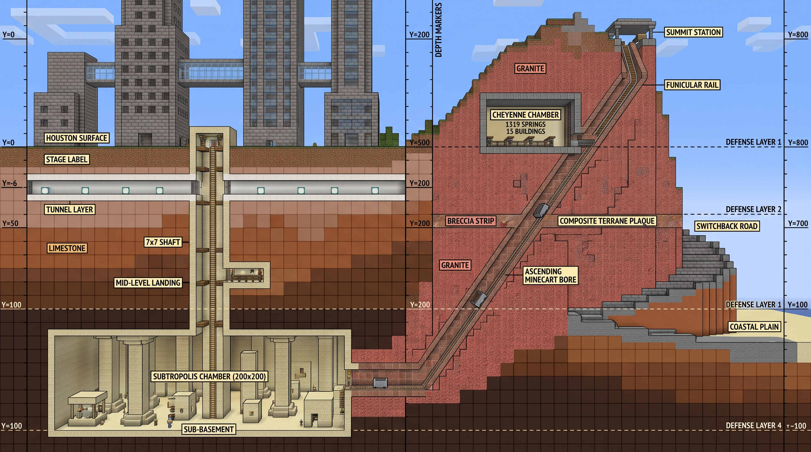
Fig. 3.1 — The full v2.0 visitor journey in one cross-section. Civilian surface → Houston tunnel → public shaft (with mid-landing at Y=−50) → SubTropolis chamber → ASCENDING service tunnel crossing the contact at Y=200 → Cheyenne chamber → funicular to summit → summit road back. NO skybridge. All 4 layers of defense-in-depth visible.
What this build is (v2.0 no-ravine)
The build is the integration of three previously-designed individual Minecraft installations. The three individual masterplans (Cheyenne 102 pages, SubTropolis 83 pages, Houston 116 pages) are the what; this report is the how they live together — the public shaft, the ascending service tunnel, the horizontal contact, the composite terrane plaque at the contact crossing, the city in the valley, the coastal plain, and the new summit observation platform that make three architectural identities one world.
v2.0 changes from the v1.0 (ravine) design
One continuous mountain — not two peaks split by a V-shaped ravine.
Horizontal granite-limestone contact at Y=200 — real geology, not narrative fiction. Visible as a 1–2 block color-change ring on the south face for the full 800-block E–W extent.
Composite terrane plaque moved from the (deleted) ravine bottom to the service tunnel contact crossing at (−40, 200, −360) — where the wall material visibly transitions from limestone to granite.
Service tunnel is now ASCENDING — 6×6 cross-section, 120 blocks, climbing from Y=0 at the SubTropolis end to Y=200 at the Cheyenne end on a 3.33:1 grade. Powered rails every 4 blocks.
Return route is funicular + summit road — no skybridge (the skybridge existed only to span the deleted ravine).
NEW 7th centerpiece: Summit Observation Platform at Y=800 — the narrative payoff of the return route, with the "Three Sites, One Mountain" sign.
The single feeling: one descent, three worlds, 800 million years of geology — civilian, industrial, and military compressed onto a single axis, in one Minecraft world, in one walk through a continuous mountain.
The 7 binding decisions (v2.0)
Decision 1 — Global Scale
1 block = 1 meter
Single global scale. Mountain peak at Y=800 (2:1 vertical compression). Build height ≥ 1,024. Fully-built core + referenced outer zones.
Decision 2 — Mountain Layout (REWORKED)
One continuous mountain, contact at Y=200
Granite cap Y=200 to Y=800. Limestone body Y=0 to Y=200 (extending to Y=−100 below the city). No ravine. Horizontal contact visible as a color line on the south face.
Climbs from Y=0 (SubTropolis end at −100, 0, −300) to Y=200 (Cheyenne end at 0, 200, −420). Minecart rail with powered rail every 4 blocks. Crosses the horizontal contact at the midpoint. Composite terrane plaque at the contact crossing.
Decision 5 — Visitor Journey (REWORKED)
30–45 min focused play
6-stage inbound, all vertical through the mountain. 2-mode surface return: funicular + summit road (no skybridge). Dramatic arc: civilian → industrial → military (vertical).
Plaque, "Three Sites, One Mountain" sign, Gotthard reference, Helsinki reference, SubTropolis trademark, Space Force sign, T-marker, breccia strip, rock ID chart. The composite terrane plaque is now at the service tunnel contact crossing (was at the ravine bottom in v1.0).
The 7 centerpieces (3 non-negotiable + 3 architectural entrances + 1 new summit platform)
25-ton blast door at the Cheyenne outer portal (the Cheyenne moment)
Mid-level observation landing at Y=−50 in the public shaft (the G-Cans moment)
Composite terrane plaque at the service tunnel contact crossing at (−40, 200, −360) (the Telling Detail)
Surface entrance to the public shaft (glass-and-steel pavilion)
SubTropolis horizontal portal (4×5 opening in the limestone flank at Y=0)
Cheyenne outer portal (6×6 opening in the granite face at Y=200)
Summit observation platform at Y=800NEW — the 7th centerpiece, the 360° view of the continuous mountain, the city, and the coastal plain.
The 9 easter eggs
Composite terrane plaque (at contact crossing) · "Three Sites, One Mountain" sign (at summit) · Gotthard-inspired sign · Helsinki-inspired sign · "World's Largest Underground Business Complex" · "U.S. Space Force — Authorized Personnel Only" · Houston T-marker · Thrust-fault breccia strip (in service tunnel floor) · Rock identification chart (at summit).
Scale and the 4-layer defense-in-depth
The build is ~1,500 × 1,500 × 800 blocks in plan-and-vertical, with an estimated ~3.5M placed blocks across all phases. The 4-layer defense-in-depth is the visual signature:
Layer
Site
Depth (Minecraft)
Era
Use
Feel
1 — Civilian surface
Houston above-ground
Y = 0 to 80
1970s
Civilian, retail, workday
Hot, bright, busy, daylit
2 — Climate-controlled shallow
Houston tunnel
Y = −6 (6 blocks down)
1970s
Civilian, beige-tile basement
Fluorescent, climate-controlled
3 — Industrial limestone
SubTropolis
Y = −100 (100 blocks down)
1964
Working, commercial, climate-stable
Lit, road-networked, white pillars
4 — Military granite
Cheyenne Mountain
Y = 250–400 (1,800+ blocks down)
1966
Military, contingency, 30 MT
Silent, deep, spring-isolated
The 30–45 minute visitor journey (v2.0 — vertical, no ravine)
From the city surface to the deep granite chambers is a single vertical trajectory, descending through all four layers in order. The return is a 2-mode surface route (funicular + summit road) bringing the visitor back to the city via the new summit observation platform. The single feeling of the journey is you go down, and the rock changes; you ride up through the contact, and the rock changes again; you stand on the summit, and the whole world is laid out below you.
The horizontal contact at Y=200 — the new Telling Detail
The previous v1.0 design used a V-shaped ravine with one rock type on each side and required a "composite terrane plaque" at the ravine bottom explaining that the geology was narrative fiction. The v2.0 design uses a horizontal granite-limestone contact at Y=200 — this is real geology. Granite plutons push up through limestone in mountain ranges worldwide (the Alps, the Appalachians, Glacier National Park, the Colorado Front Range). The contact is visible at the surface (a 1–2 block color-change ring on the south face) and inside the service tunnel (a wall-material transition at the contact crossing). The composite terrane plaque moves to the contact crossing, where the geology is honest.
Reference to the 3 individual master plans
This Combined Complex HTML report preserves the fourth-stage composition in the masterplan series. The three individual site masterplans are the binding specs for in-site geometry — chamber arrays, pillar grids, food courts, J-curve, and T-markers — while Masterplan 04 normalizes their composition and Masterplan 05 owns current-world placement. For chamber-by-chamber detail, refer to the child HTML reports.
04 / The Three Souls
Each site has its own soul. The combined complex is the conversation between them.
Houston is the anterior — the public face, bright and busy and civilian. SubTropolis is the middle layer — working, climate-controlled, the city's payroll 100 feet down. Cheyenne is the posterior — deep, silent, military, the nation's contingency 1,800 feet down. The build's dramatic arc is the vertical descent between them, all in one continuous mountain.
CHEYENNE — 1961–66
Industrial Cathedral
1,800+ feet of pink-grey Pikes Peak granite. 4.5 acres of building floor space on 1,319 half-ton coil springs. 15 freestanding steel-and-concrete buildings, spring-decoupled from the rock. 25-ton blast doors, baffle-curved J-curve tunnel, 30 MT overpressure rating at 1.2 miles, 30-day self-sufficiency. The soul is cold competence, hidden in plain sight. A mountain with a city inside it, and the city does not acknowledge that it is a city.
14 million sq ft under 100–160 feet of Bethany Falls limestone. A 200×200 block grid of 25-foot-square pillars on 65-foot centers. 16-foot ceilings, 40-foot corridors, 8.2 miles of paved illuminated road, 2.1 miles of rail, 55+ tenants. White-painted pillars with painted pillar numbers, channel-letter tenant signs, 15 mph speed limits, a quartz medallion in the central plaza. The soul is light work, climate, and commerce.
Civilian, climate-controlled, retail-flavored, workday-only, two-layer city. 6 miles of pedestrian tunnel under 95 blocks of downtown, 20 feet below street grade. 80+ access points, almost all through private building lobbies. Beige tile, fluorescent light, T-marker signs at the curb. Wells Fargo and McKinney Garage as the only two direct street-level entrances. The soul is busy, daylit, climate-controlled, and forgettable on purpose — the tunnel is so mundane it disappears into the working life of the city.
They coexist through stratification — each at its own depth, each with its own climate, each with its own era, each visible from a different elevation. Houston is the civilian anterior, the place where the build is bright and busy. SubTropolis is the middle layer, working and climate-controlled. Cheyenne is the military posterior, the nation's contingency 1,800 feet down.
The build's dramatic arc is the vertical descent between them. The public shaft is the descent from anterior to middle. The service tunnel is the ascent from middle to posterior (climbing through the contact at Y=200). The J-curve is the descent into the posterior itself. The build is not a tour of three sites — it is a single trajectory through three concentric cultures of human underground use, and the cultures are the rooms on the trajectory.
Three arcs through the build
The dramatic arc
Civilian → industrial → military → civilian. Each step deepens the seriousness of the architecture. Light, climate, sound, and culture all change. The depth is not a metaphor for power; it is a physical record of how much rock the nation was willing to put above a thing — and the answer goes: 20 feet for a lunch trip, 100 feet for a working life, 1,800 feet for a war.
The geological arc (v2.0 — updated)
No rock → limestone → granite (through the horizontal contact at Y=200). The visitor walks through 800 million years of geology in 30–45 minutes. From the coastal-plain soil to the 270 Ma Bethany Falls limestone to the 1.08 Ga Pikes Peak syenogranite, the rock beneath your feet is the build's historical record. The v2.0 visitor rides through the contact in the service tunnel (was: walked down to the contact in a ravine in v1.0).
The historical arc
1970s Houston → 1964 SubTropolis → 1966 Cheyenne. The deeper you go, the older the site. The 1961 Cheyenne chamber is older than the 1964 SubTropolis chamber, which is older than the 1970s Houston tunnel. Depth is the temporal axis compressed into a vertical axis.
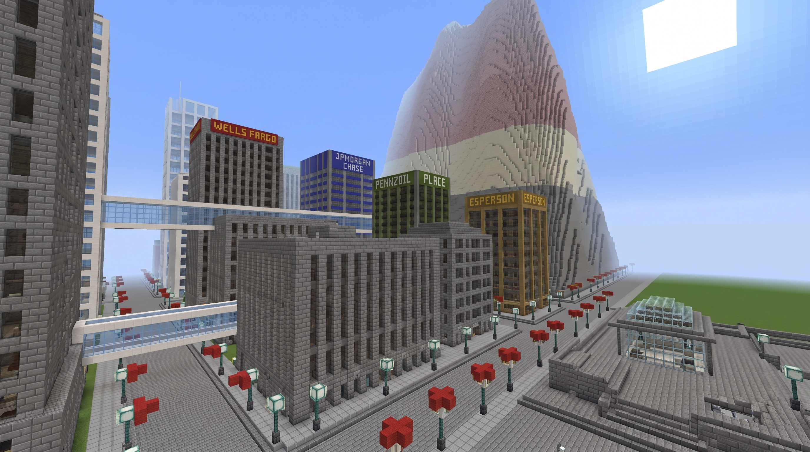
Fig. 4.1 — The city in the valley, with the continuous mountain rising behind (v2.0 — no ravine). The horizontal granite-limestone contact is visible as a color line on the mountain. The civilian anchor of the build — bright, busy, daylit. The combined complex's anterior.
Reference to the 3 individual master plans
For the in-depth soul and architectural analysis of each individual site, refer to:
01-cheyenne-mountain-complex / masterplan.html — child-internal J-curve, blast-door, and spring-grid architecture
The 4-layer defense-in-depth as the visual signature
The defense-in-depth layering is the build's visual signature. Each layer has a different rock type, a different era, a different use case, and a different feel. As the visitor descends and then climbs through the contact, the rock changes, the era changes, the use changes, the climate changes, the light changes, the sound changes, and the feel changes. The layering is not a metaphor — it is a physical progression through 800 million years of geology and 60 years of human use, all within a single continuous mountain.
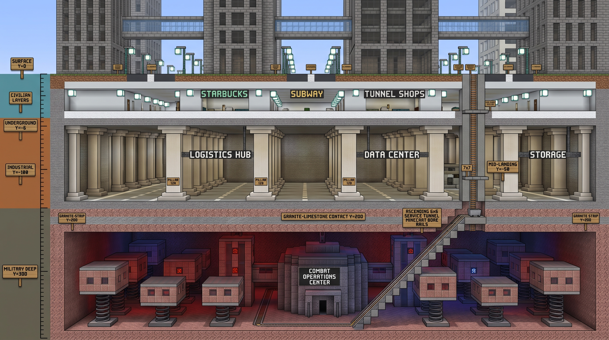
Fig. 5.1 — All 4 layers of defense-in-depth in one cutaway (v2.0). Civilian surface (Y=0) → Houston tunnel (Y=−6) → SubTropolis chamber (Y=−100) → Cheyenne chamber (Y=250–400). The ascending service tunnel crosses the horizontal contact at Y=200 (visible as a wall-material transition + breccia strip + composite terrane plaque). The visual signature of the build.
The 4 layers
Layer
Site
Rock
Depth
Era
Use
Feel
1 — Civilian surface
City + Houston above
None (city above ground)
0 to −20 ft
1970s
Civilian, retail, workday
Hot, bright, busy, daylit
2 — Climate-controlled shallow
Houston tunnel
None (cut-and-cover)
0 to −20 ft
1970s
Civilian, beige-tile basement
Fluorescent, climate-controlled
3 — Industrial limestone
SubTropolis
Bethany Falls limestone (270 Ma)
100–160 ft
1964
Working, commercial, climate-stable
Lit, road-networked, white pillars
4 — Military granite
Cheyenne Mountain
Pikes Peak granite (1.08 Ga)
1,800–2,000 ft
1966
Military, contingency, 30 MT
Silent, deep, spring-isolated
The visitor's vertical descent through all 4 layers (v2.0 — no ravine)
Y = 0 (city street): no defense, full sun, climate hostile (Houston-style heat)
The visitor starts on a sunlit downtown sidewalk. T-markers at the curb. Skybridges overhead. The continuous mountain is visible to the north with a horizontal color line on its flank (the granite-limestone contact at Y=200).
Y = −6 (Houston tunnel): no defense, climate-controlled, dim
The visitor descends 6 blocks to the Houston tunnel. Beige VCT tile. Fluorescent light. Channel-letter tenant signs. The dim, climate-controlled basement of the city.
Y = −100 (SubTropolis chamber): 100 ft of limestone over the chamber, climate-stable
The visitor walks through the city, finds the public shaft entrance at the SE corner, descends 100 blocks. At Y=−50, the mid-landing observation room. At Y=−100, the SubTropolis lobby. The white pillars and channel-letter signs of the working layer.
Y = 200 (service tunnel contact crossing): ASCENDING through the horizontal contact
The visitor boards a minecart at the SubTropolis sub-basement gate, rides the 6×6 service tunnel upward through the mountain on a 3.33:1 grade, crossing the horizontal contact at Y=200 at the midpoint. The walls visibly transition from cream-grey smooth-stone limestone to pink-grey polished diorite granite. The breccia strip is on the floor. The composite terrane plaque is in a 3×5 alcove on the upper (granite) wall.
Y = 300 (Cheyenne chamber): 1,800+ ft of granite above, in a baffled J-curve tunnel, behind 25-ton blast doors
The visitor exits the minecart at the 25-ton blast door, walks the J-curve access tunnel (800 blocks), emerges in the chamber with 1,319 springs, 15 buildings, the Combat Operations Center, the Air Defense Operations Center, the medical clinic, the Granite Inn bar. The Cheyenne moment.
Real-world precedents
The 4-layer defense-in-depth maps directly to real-world U.S. Continuity-of-Government (COG) and European civil-defense practice. The single most thoroughly documented real-world system is the U.S. Federal Relocation Arc — a network of bunkers within ~300 mi of Washington, D.C., with three layers of redundancy: Alpha team (in agency basements), Bravo team (Mount Weather, 48 mi west of D.C.), and Charlie team (dispersed to facilities 20–30 mi out from D.C.). The biggest bunkers beyond the Beltway are Mount Weather and Site R / Raven Rock Mountain Complex.
The Swiss Réduit (1938–1990s) was a three-line defensive strategy: forward defense, middle defense, and alpine redoubt. The Norwegian and Finnish practice embeds command-and-control in mountain installations as a matter of standing policy. The combined complex is, in COG terms, a single COG-system with three layers, on a single physical axis, in a single vertical descent.
Fig. 5.2 — The composite terrane plaque at the service tunnel contact crossing at (−40, 200, −360) (v2.0 — was at the ravine bottom in v1.0). The build's Telling Detail — a 1×2 carved-stone plaque explaining the horizontal granite-limestone contact. Geologically honest: real granite plutons push up through limestone in mountain ranges worldwide.
The composite terrane plaque (v2.0 — at the contact crossing)
The plaque is in a 3×5 alcove carved into the upper (granite) wall of the 6×6 service tunnel at the contact crossing. The wall material visibly transitions mid-tunnel: cream-grey smooth-stone limestone on the south face, pink-grey polished diorite granite on the north face. A 1-block-wide cobblestone + calcite breccia strip is on the floor at the contact. The plaque is a 1×2 carved calcite + carved stone brick block. Six oak signs next to the plaque read: "Composite Terrane / Granite 1.08 Ga Pikes Peak / Limestone 270 Ma Bethany Falls / Horizontal contact at this elevation / Same geology: Alps, Appalachians, Glacier NP / Crossed by service tunnel". A single redstone lamp on the alcove ceiling casts warm yellow light. The plaque is at a real geological boundary, not narrative fiction.
06 / Real-World Precedents
What other countries have built versions of this
The strongest evidence that this combined layout works comes from the fact that other countries have built versions of it. The combined complex is, in short, Helsinki + Switzerland + Colorado Springs on one map — with the v2.0 update that the Switzerland piece is now a continuous mountain with a horizontal contact, not a V-shaped gorge.
Switzerland — the Sasso da Pigna / Festung San Carlo / AlpTransit model
The Swiss Réduit national (Reduit) was a WWII-era strategy to fall back into the Alps and hold the Alpine passes indefinitely. The Gotthard anchor is the most relevant:
Fort Sasso da Pigna (Festung A 8385) sits on the Gotthard Pass, built 1941–1943, 2,400 m of galleries, four 105 mm gun positions, a 500-man garrison, an 87-bed hospital, declassified 2001, opened as the Sasso San Gottardo Museum in 2012.
Festung San Carlo (A 8390) is the prototype Réduit artillery fortification, built 1942, declassified 1998–1999, converted 1998–2004 into La Claustra — a four-star "underground monastery" hotel and seminar center with 17 rooms, 25 beds, dining hall, bistro, library, spa, and 6 conference rooms. 4,000 m² at 2,050 m above sea level, 200 m back from a 200 m entrance tunnel bored into the Gotthard massif.
Gotthard Base Tunnel, 57.09 km long, opened 1 June 2016, is the world's longest and deepest railway tunnel, with up to 2,300 m of rock cover, costing CHF 12.2 billion over 17 years of construction. It runs under the same Gotthard massif that hosts the Sasso da Pigna and La Claustra.
The town of Airolo sits in the valley floor below all of this, at 1,179 m above sea level.
Switzerland is the real-world proof that a single mountain can simultaneously host a hardened military bunker, a converted-to-civilian-use former bunker, a record-setting civilian transport tunnel, and a civilian town in the valley below — and that this can be operated as a coherent tourism and infrastructure cluster. The v2.0 combined complex is the Minecraft version of this.
Finland — the Helsinki Underground Master Plan
Helsinki is thought to be the only city in the world with a written, binding, citywide underground master plan:
~10 million m³ of underground space beneath the city
~500 individual subterranean facilities
220 km of technical tunnels
~5,500 civil defense shelters with space for ~900,000–1,000,000 people — in a city of ~700,000 residents
~90 facilities with dual civilian / civil-defense use
An average of 1 m² of underground per 100 m² of ground surface
Helsinki is the model of a civilian city that happens to sit on top of a defense network. The 90 dual-use facilities are the key insight: civilian and military underground functions are not separated; they share infrastructure, with the use case (peace vs. emergency) as a switch. The combined complex's public shaft is a single 5×5 block version of Helsinki's civilian-by-default, defense-by-override design philosophy.
Other precedents in the survey
Precedent
Location
Lesson for the build
Norway + Oslo Opera House
Oslo
Mountain infrastructure is a national norm. A signature public building can be the transition between street and underground.
Jurong Rock Caverns
Singapore
A deep-storage facility (130 m down) can serve a surface city. 5 caverns, 1.47M m³ storage, built in the Jurong Formation.
G-Cans
Kasukabe, Japan
Public tours of deep civil engineering are popular. "Underground temple" is a recognized aesthetic.
Montreal RÉSO
Montreal
The "underground city" as a typology exists at 33 km scale. 41+ stations, 3.3M sq ft commercial.
SubTropolis / Hunt Midwest
Kansas City
Private commercial underground is viable when the climate is right (limestone) and the cost is right. 14M sq ft developed, 55+ tenants.
Cheyenne Mountain / NORAD
Colorado Springs
Hardened mountain command is feasible at 1:1 in the real world and at 1:1 in Minecraft.
Houston tunnels
Houston
Privately built, building-by-building, with no central authority, in a hostile climate. 95 blocks, 6 mi.
Henry Mountains, Utah (laccoliths)
Utah
Real-world example of a horizontal granite-limestone contact (the v2.0 build's mountain geometry).
Aar granite / Bergell granite (Swiss Alps)
Switzerland
Real-world example of granite intruding into limestone with a roughly horizontal contact exposed in the flanks.
Fig. 6.1 — The Cheyenne portal from outside (v2.0). The portal is now on the granite face of the continuous mountain at the contact elevation (Y=200), not on the granite north wall of a V-ravine. The exterior face of the military end — small, controlled, with a "U.S. Space Force — Authorized Personnel Only" sign.
07 / Geological Framing v2.0 Updated
The horizontal granite-limestone contact at Y=200
The v2.0 design uses a horizontal granite-limestone contact at Y=200, not the v1.0 V-shaped ravine. This is real geology: granite plutons push up through limestone in mountain ranges worldwide — the Alps, the Appalachians, Glacier National Park, the Henry Mountains of Utah, the Colorado Front Range. The composite terrane plaque moves to the service tunnel contact crossing at (−40, 200, −360), where the wall material visibly transitions from limestone to granite. Geologically honest.
Why the ravine was dropped (v1.0 → v2.0)
The v1.0 design used a V-shaped 80–120 block ravine with one rock type on each side, requiring a "composite terrane plaque" explaining that the geology was narrative fiction (a "thrust-faulted composite terrane klippe"). The v2.0 design uses a horizontal granite-limestone contact at Y=200 — this is real geology (granite plutons push up through limestone in mountain ranges worldwide). The composite terrane plaque moves to the service tunnel contact crossing, where it is geologically honest. The plaque is at a real geological boundary, not a narrative-fiction boundary.
The two rocks (unchanged from v1.0)
Above the contact — Pikes Peak Granite
1.08 Ga — Mesoproterozoic
Pikes Peak batholith, a 1.08-billion-year-old anorogenic A-type granite complex. Covers ~1,200 sq mi of the central Front Range, extends east under the Great Plains (visible to aeromagnetic surveys at least 80 mi east of its outcrop), and is exposed over an area ~80 mi N–S × ~25 mi E–W. The dominant rock type is coarse-grained pink-to-brick-red syenogranite (potassic series).
Bethany Falls Limestone, a member of the Swope Limestone formation of Missourian (Upper Pennsylvanian) age, deposited ~270 million years ago in a shallow tropical sea. In Kansas City it is mined at 100–160 ft below the surface for the SubTropolis complex. Compressive strength 18,000–24,000 psi (~6× concrete).
Can a single mountain range host both at a horizontal contact?
The two rocks are different ages, different origins (intrusive igneous vs. marine sedimentary), different tectonic settings, and different positions in a stratigraphic column. In a real mountain range, the basement (granite) is at the bottom; the cover (limestone and other sediments) is on top, if the cover was deposited after the basement crystallized.
The v2.0 design uses a laccolithic geometry — a real geological configuration where a granite pluton intrudes into the overlying limestone country rock from below, lifting the limestone into a dome and creating a roughly horizontal contact between intrusive granite above and sedimentary limestone below. Erosion has since stripped some of the overlying limestone, exposing the granite core as the mountain's peak. Real-world examples: the Henry Mountains (Utah), the La Sal Mountains, the Abajo Mountains, the Navajo Mountain, the Bergell granite (Swiss Alps), the Aar granite (central Swiss Alps).
For the combined complex, the build is a real geological configuration, not a geographic compression. The mountain is a laccolith — a granite pluton that pushed up through limestone, leaving a horizontal contact at Y=200. The contact is visible at the surface (a 1–2 block color-change ring on the south face, full 800-block E–W extent) and inside the service tunnel (a wall-material transition at the contact crossing). The plaque at the contact crossing is at a real geological boundary.
The composite terrane plaque (v2.0 — at the service tunnel contact crossing)
The service tunnel crosses the horizontal contact at the midpoint of its 120-block length, at the location (−40, 200, −360) — about 60 blocks into the climb from the SubTropolis end and about 60 blocks from the Cheyenne end. At this location, the wall material visibly transitions mid-tunnel: cream-grey smooth-stone limestone on the south face (the lower elevation wall), pink-grey polished diorite granite on the north face (the upper elevation wall). A 1-block-wide mixed cobblestone + calcite breccia strip is on the floor at the contact. The composite terrane plaque — centerpiece #3, easter egg #1 — is in a 3×5 alcove carved into the upper (granite) wall, with 6 oak signs explaining the geological setting.
Geological honesty (v2.0)
The plaque is at a real geological boundary, not narrative fiction. The horizontal granite-limestone contact is exposed at the surface (the contact ring at Y=200 on the south face) and crossed by the service tunnel (the contact crossing at Y=200). Real geology: granite plutons push up through limestone in mountain ranges worldwide (the Alps, the Appalachians, the Sierra Nevada, the Front Range of Colorado, the Henry Mountains of Utah). The build's mountain is a laccolith, not a ravine.
The honest in-world plaque text (6 lines on 6 oak signs)
Line 1 (large): COMPOSITE TERRANE
Line 2: The granite above this alcove is 1.08 Ga Pikes Peak granite.
Line 3: The limestone below is 270 Ma Bethany Falls limestone.
Line 4: They are in horizontal contact at this elevation, where
Line 5: the granite pluton pushed up through the limestone.
Line 6: In real mountain ranges (the Alps, the Appalachians, Glacier National Park), this is a common geological feature.
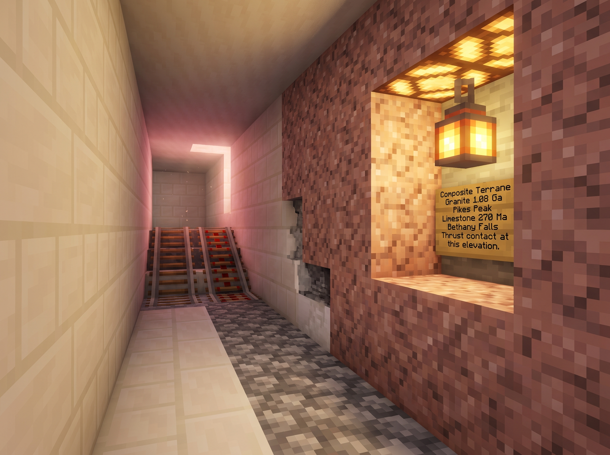
Fig. 7.1 — The service tunnel contact crossing at (−40, 200, −360) (v2.0). The wall material visibly transitions mid-tunnel: cream-grey smooth-stone limestone on the south face, pink-grey polished diorite granite on the north face. The 1-block breccia strip is on the floor. The composite terrane plaque is in the 3×5 alcove on the upper (granite) wall, lit by a single redstone lamp. The "you are traveling through 800 million years of geology" moment.
08 / The Two Architectural Centerpieces v2.0 Updated
The spine of the combined complex
The two architectural centerpieces are the connections that make the three sites into one complex. Without them, the three sites are just three sites. With them, the three sites are one descent. In v2.0, the public shaft is unchanged; the service tunnel is now ascending 3.33:1 grade instead of horizontal-under-a-ravine.
Fig. 8.1 — The v2.0 visitor journey in cross-section. The public shaft (vertical centerpiece, 7×7, 100 blocks) on the left, the ascending service tunnel (6×6, 120 blocks, 3.33:1 grade) through the contact at Y=200 in the center. Together they are the spine of the combined complex.
The Public Shaft — the vertical centerpiece (unchanged from v1.0)
The public shaft is the civilian transition — the place where a sunlit sidewalk becomes a 65°F limestone mine. The mid-level observation landing at Y=−50 is the G-Cans moment — a single glass window looking out at the city's underground utility corridor.
Specifications
Cross-section
7×7 blocks total (5×5 inner lift core + 1-block emergency stair on west + 1-block service chase on east)
Length
100 blocks vertical (Y = 0 to Y = −100)
Mode
Mechanical lift primary; emergency stair visible through glass pane in outer west wall
Position
(X=+60, Y=0, Z=−70) — at the SE corner of the city, in the Combined Complex Transit Hub plaza
Mid-landing
At Y=−50, 7×7 alcove carved out of the south face
Surface entrance
7×7 glass-and-steel pavilion in a 20×20 stone-brick plaza
Bottom lobby
7×7 room at Y=−100, security gate, "Welcome to SubTropolis" channel-letter sign
The descent experience
Top — Surface pavilion (Y=0 to Y=−3): 7×7 glass-and-steel pavilion, guard booth, turnstile, "SubTropolis — Public Access" sign, T-marker, "EMPLOYEE ENTRANCE / EMERGENCY EGRESS" dual-use sign. Daylight (light 15).
Upper section (Y=−3 to Y=−50): gray concrete walls, redstone lamps every 8 blocks, iron-bars lift enclosure, glass pane window (west), oak fence service chase (east), oak stairs emergency stair (west, visible through glass). Cool blue/gray fluorescent (light 12).
Mid-landing (Y=−50) — the G-Cans moment: 7×7 alcove, 3×3 glass window on south face looking out at a 7×7 utility corridor (polished diorite pillar, water pipe, power line, fiber-optic conduit). Labelled limestone block ("Bethany Falls Limestone — 270 Ma, Pennsylvanian"). Information sign with 4 lines. Oak stairs bench. Iron door to stair continuation.
Lower section (Y=−50 to Y=−100): walls transition from gray concrete → smooth stone → calcite. Same redstone lamp lighting, but the reflected color shifts visibly from cool blue/gray to warm cream. The player feels the rock changing.
Bottom — Public Access Lobby (Y=−100): 7×7 room, iron bars security gate, turnstile, "Welcome to SubTropolis" channel-letter sign, "Hunt Midwest — Est. 1964" sign, "HELSINKI 5,500" carved block (Easter egg #4), iron door opening onto Hushpuckney Avenue. The arrival moment.
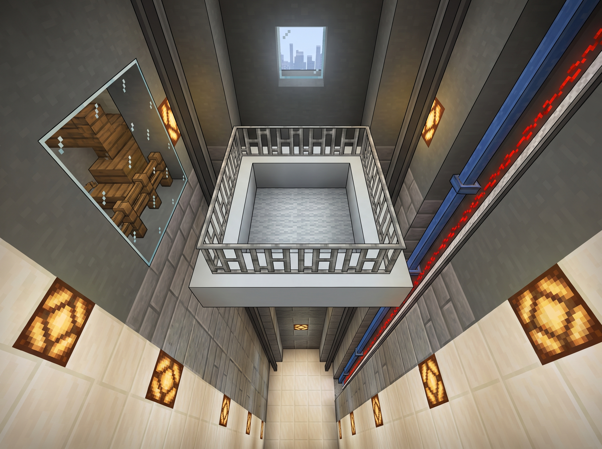
Fig. 8.2 — The public shaft descent. 5×5 lift car in a 7×7 shaft, iron bars enclosure, spiral oak stair visible through glass pane, wall material transitioning (gray concrete → smooth stone → calcite), redstone lamps, service chase on the east with utility runs.
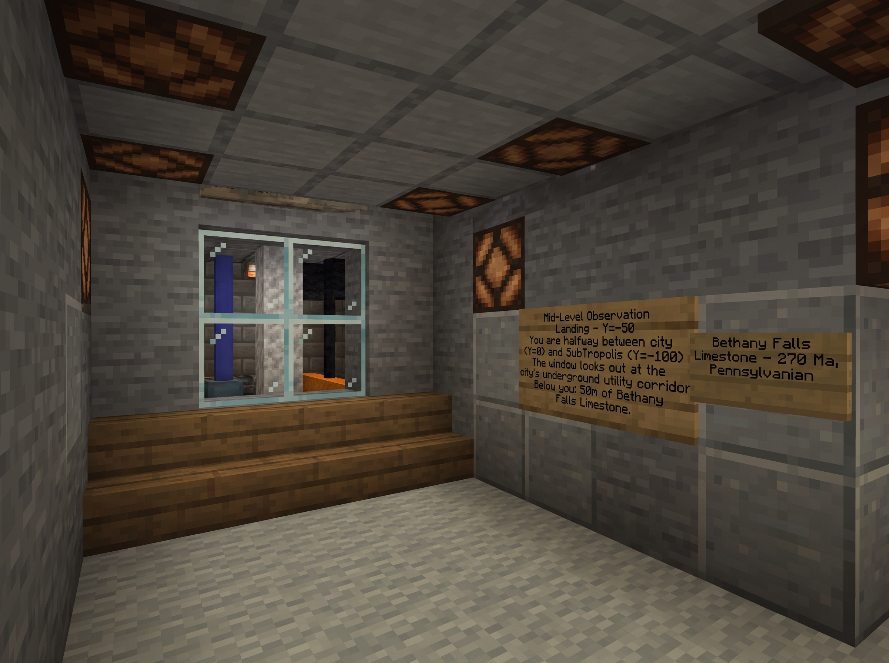
Fig. 8.3 — The mid-level observation landing at Y=−50. The G-Cans moment. 3×3 glass window looking out at the polished diorite pillar in the city's utility corridor. Labelled limestone block. Oak bench. The breath between the two halves of the descent.
The Service Tunnel — the horizontal centerpiece v2.0 ASCENDING
The service tunnel is the inter-site transition — the place where a working limestone business park becomes a hard military command. The 25-ton blast door at the Cheyenne end is the Cheyenne moment. In v2.0 the tunnel is ASCENDING on a 3.33:1 grade (was horizontal-under-a-ravine in v1.0), climbing from Y=0 at the SubTropolis end to Y=200 at the Cheyenne end. The minecart ride up through the contact at Y=200 is the new signature moment.
Specifications (v2.0)
Cross-section
6×6 blocks total (4-block inner rail corridor + 1-block utility strip on north + 1-block emergency-escape corridor on south)
Length
120 blocks (SubTropolis end to Cheyenne end), ASCENDING 3.33:1 grade (Y=0 to Y=200 over 60 blocks of horizontal climb, then lateral at Y=200 for the remaining 60 blocks)
Mode
Minecart rail (1-block gauge, single track, powered rail every 4 blocks in the climbing section)
Position
From SubTropolis NW corner of sub-basement (X=−100, Y=0, Z=−300) to Cheyenne outer portal (X=0, Y=200, Z=−420)
At (−40, 200, −360) — the midpoint of the 120-block climb, where the wall material transitions from limestone to granite
SubTropolis end
Iron bars security gate, "SERVICE TUNNEL → CHEYENNE / U.S. Space Force — Authorized Personnel Only" sign, Gotthard-inspired sign (Easter egg #3)
Cheyenne end
25-ton blast door (3-block iron door in 6-block quartz-stair frame), 4-block checkpoint corridor, guard booth (centerpiece #1)
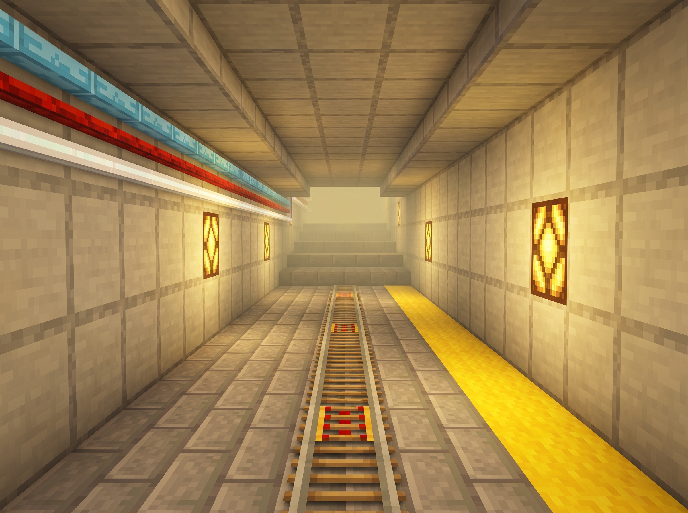
Fig. 8.4 — The service tunnel in the limestone section (v2.0 — SubTropolis end, lower elevation). 6×6 cross-section with cream-grey smooth-stone walls, minecart rail with powered rail every 4 blocks (the climb), SubTropolis color-coded utility strip, yellow emergency-escape corridor stripe. The tunnel gently ascends. The "creamer, working, industrial" feel of the SubTropolis end of the climb.Fig. 8.5 — The service tunnel contact crossing at (−40, 200, −360) (v2.0 — the geological moment). Walls transition mid-tunnel: cream-grey smooth-stone limestone on south face, pink-grey polished diorite granite on north face. 1-block breccia strip on floor. 3×5 alcove on the upper (granite) wall with the composite terrane plaque, lit by a single redstone lamp. "You are traveling through 800 million years of geology" mood.
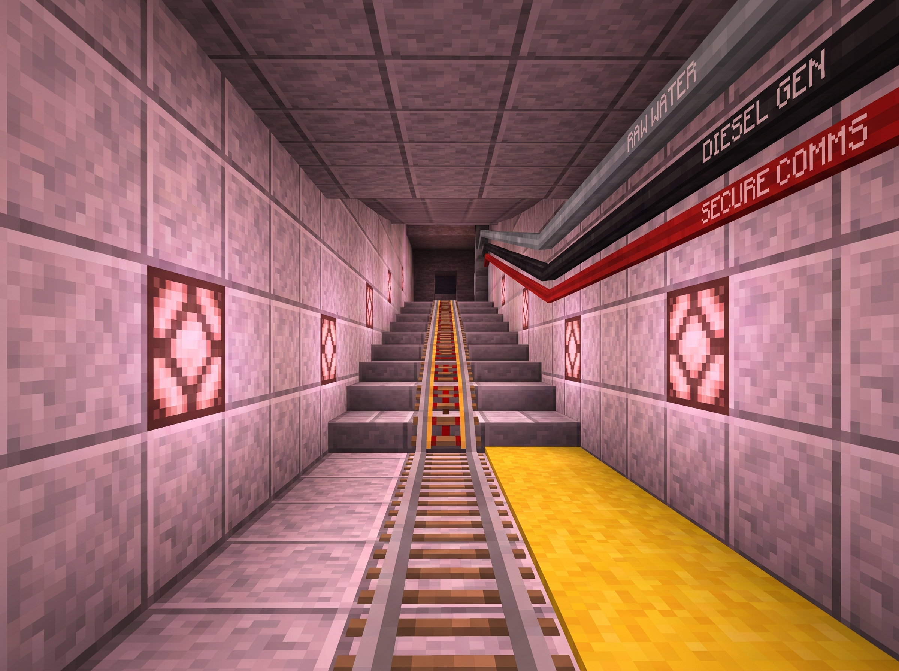
Fig. 8.6 — The service tunnel in the granite section (v2.0 — Cheyenne end, upper elevation). 6×6 cross-section with pink-grey polished diorite walls and self-supporting ceiling (no dropped ceiling — granite is self-supporting). Minecart rail, Cheyenne color-coded utilities (gray, black, red), visible 4:1 grade aspect, end of tunnel shows a darker, more dramatic space ahead.Fig. 8.7 — The 25-ton blast door at the Cheyenne outer portal at (0, 200, −420) (v2.0 — on the continuous mountain, at the contact elevation). 3-block-thick iron door in a quartz-stair frame, recessed in a 4-block-deep checkpoint corridor. "U.S. Space Force — Authorized Personnel Only" sign. The Cheyenne moment — the cinematic arrival at the granite layer. Centerpiece #1.
The journey from city surface to deep granite chambers
The two centerpieces echo each other in scale — the public shaft is 100 blocks vertical (Y=0 to Y=−100), the service tunnel is 120 blocks horizontal-and-vertical (Z=−300 to Z=−420, Y=0 to Y=200). Together they form an L-shape, with SubTropolis at the corner. The descent through the public shaft is the descent from civilian to industrial. The climb through the service tunnel is the journey from industrial to military — the minecart ride up through the contact at Y=200 is the new signature moment. The 25-ton blast door at the end of the service tunnel is the threshold — the place where the working world becomes the war world.
09 / The Mountain Range v2.0 Updated — continuous, no ravine
One continuous mountain with a horizontal contact at Y=200
The mountain range is the geographic signature of the build. In v2.0, the mountain is a single continuous mass (NOT two peaks split by a V-shaped ravine) with a single dominant granite peak and a horizontal granite-limestone contact at Y=200 visible as a 1–2 block color-change ring on the mountain's south face.
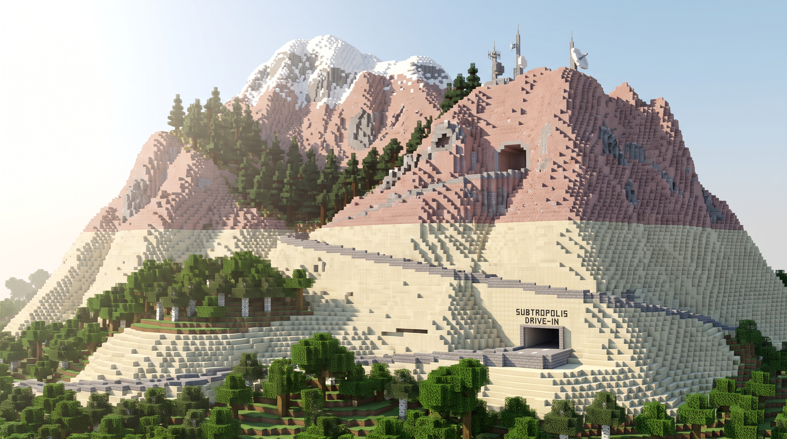
Fig. 9.1 — Wide exterior of ONE continuous mountain range (v2.0 — no ravine, no V-notch, no gorge). Granite peak at Y=800, cream-grey limestone body below, horizontal contact at Y=200 visible as a color line. SubTropolis horizontal portal in the limestone flank, Cheyenne outer portal in the granite face at the contact elevation. The geographic signature of the world.
The granite cap (Cheyenne side, above the contact, Y=200 to Y=800)
Footprint
X = −400 to +400, Z = −800 to −200 (800 × 600 blocks)
Summit
Y = 800 at (0, 800, −500) — Pikes Peak-style sharp triangle, the apex of the granite intrusion
Composition
polished_diorite (Pikes Peak syenogranite analogue, pink-grey) — core; stone (upper weathered layer); grass + dirt overlay on lower slopes
Forest
spruce + dark_oak on lower slopes (Y = 200 to 500); bare rock at treeline (Y = 500)
Snow line
Snow layer on top 100 blocks (Y = 700 to 800); 5-block-wide ice cap at summit
Chamber inside
Y = 250 to 400, deep inside the granite. 549+ blocks of solid granite above the chamber ceiling
Antennas
3–4 spruce-fence antenna poles on the central ridgeline, with string "wires" (1960s NORAD-style radar)
Summit station
10×10 building at (0, 800, −500) — oak log walls + spruce roof, funicular car at top of rail
The limestone body (SubTropolis side, below the contact, Y=0 to Y=200, extending to Y=−100 below)
Footprint
X = −400 to +400, Z = −800 to −200 (800 × 600 blocks) — same as granite, wider in profile (the granite cap sits on the wider limestone base)
oak + birch on lower slopes (Y = 0 to 80); bare rock at treeline (Y = 80 on south face, Y = 100 on north face)
Horizontal contact
At Y=200, a 1–2 block color-change ring of mixed cobblestone + calcite + diorite breccia. Visible on the south face for the full 800-block E–W extent. The mountain's signature line.
The horizontal contact at Y=200 (v2.0 — the new Telling Detail)
The horizontal contact is the geological signature of the v2.0 build. It is a single fixed elevation across the entire mountain, visible as a 1–2 block color-change ring on the south face. A single oak sign at the most prominent point on the ring reads: "Horizontal Contact — Granite 1.08 Ga over Limestone 270 Ma". Inside the service tunnel, the contact is exposed at the contact crossing at (−40, 200, −360), where the composite terrane plaque lives.
Property
Value
Notes
Elevation
Y = 200
A horizontal plane through the entire mountain
Visibility at surface
1–2 block transition band
Mixed cobblestone + calcite + diorite ring; visible on the south face
Length (E–W)
~800 blocks (X = −400 to +400)
Rings the mountain for its full east-west extent
Inside the service tunnel
Contact crossing at (−40, 200, −360)
Wall material visibly transitions; composite terrane plaque in 3×5 alcove
Signage
1 oak sign on the south face
"Horizontal Contact — Granite 1.08 Ga over Limestone 270 Ma"
The forest and the snow line
The forest species match the rock type: spruce and dark oak on the granite (acidic soils, above the contact at Y=200), oak and birch on the limestone (alkaline soils, below the contact). The asymmetry of vegetation is the geology made visible. The snow line is at Y=700 on the granite summit.
The sky view from the city
From the city surface, the visitor sees the mountain as a single dominant mass with a sharp granite peak, a horizontal color line at Y=200 (the contact), cream-grey limestone slopes with oak forest below the line, and pink-grey granite slopes with spruce forest and snow above. There is NO V-shaped notch in the center (the v1.0 ravine is gone). The mountain is the geographic signature of the world — visible from miles away — and the horizontal contact is the new visual cue.
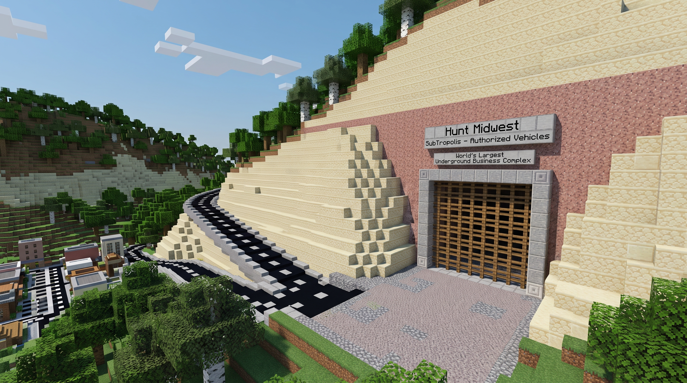
Fig. 9.2 — The SubTropolis horizontal portal (v2.0). 4×5 opening in the cream limestone flank of the continuous mountain, "Hunt Midwest SubTropolis — Authorized Vehicles" sign, "World's Largest Underground Business Complex" subtitle, vehicle gate, paved road switchbacking down. The horizontal contact is visible on the mountain above the portal as a color line. Easter egg #5.
10 / The City in the Valley
The civilian anchor of the world
The city in the valley is the public face of the combined complex. The public lives here, the workers commute from here, the public shaft delivers them to SubTropolis, and the tourists arrive here. The city is the civilian anchor — the place where the build is public, bright, and daylit.
Fig. 10.1 — The city in the valley, with the continuous mountain rising behind (v2.0). 4 anchor towers (Wells Fargo red, JPMorgan blue, Pennzoil green, Esperson gold), glass skybridges, stone-brick street grid, T-markers at the curb, the public shaft plaza.
Specifications
Footprint
138 × 138 blocks (per the 03-houston-tunnel-system masterplan), oriented with the long axis east-west
Street grade
Y = 0
Tallest tower
Y = 80 (JPMorgan Chase, 80 blocks tall)
World origin
(0, 0, 0) — center of the city, at ground level, sea level
8–10 generic downtown towers filling the grid (30–50 blocks tall, stone brick + glass pane)
2–3 parking garages at the edges (10–15 blocks tall, stone brick with concrete floors)
Street grid: stone brick roads (4 blocks wide) on a 12-block grid, 1-block-wide oak-plank sidewalks
Skybridges: glass-pane-enclosed crossings at Y=5, connecting adjacent towers at the 2nd-floor level
Streetlights: sea lanterns on oak fences, every 8 blocks along the streets
T-markers: red wool on white concrete at the two direct street-level tunnel entries (Wells Fargo, McKinney Garage) and at the public shaft entrance
Below ground (the Houston tunnel sample)
The 24-block Houston tunnel sample is 6×4 blocks at Y=−6, with white concrete walls, white wool VCT floors, smooth stone slab dropped ceiling, sea lantern fluorescent lighting, and channel-letter tenant signs. The food court archetypes (Esperson, 1001 Fannin, Pennzoil Place, McKinney Place) are inherited from the 03-masterplan. The public shaft descent occupies a 7×7 buffer block at the SE corner of the sample.
The Combined Complex Transit Hub plaza
A 20×20 stone-brick plaza at the east edge of the city, at (X=+60, Y=0, Z=−70), with the 7×7 public shaft pavilion at its center. The plaza is bounded by the city on three sides and opens onto the coastal plain on the east. The T-marker at the curb is the visual signature of the world's civilian underground.
Fig. 10.2 — Street-level view of the Houston tunnel entrances. Wells Fargo Plaza-style entrance with TUNNEL sign, T-marker at curb, McKinney Garage-style direct access, skybridges overhead, glimpse into the dim tunnel below. Easter egg #7 (T-markers). The "climate-controlled basement you can walk through in a suit" moment.
The coastal plain
East and south of the city, extending to the world edge, is the coastal plain: ~600 × 1500 blocks, flat grass, sparse oak and spruce forest, a 30×30 block lake at the eastern edge with lily pads and oak boats, and the 4-block-wide stone-brick arrival road from the lake to the city. The coastal plain is the soft edge of the build — a place where the player can sit and look back at the city and the mountain.
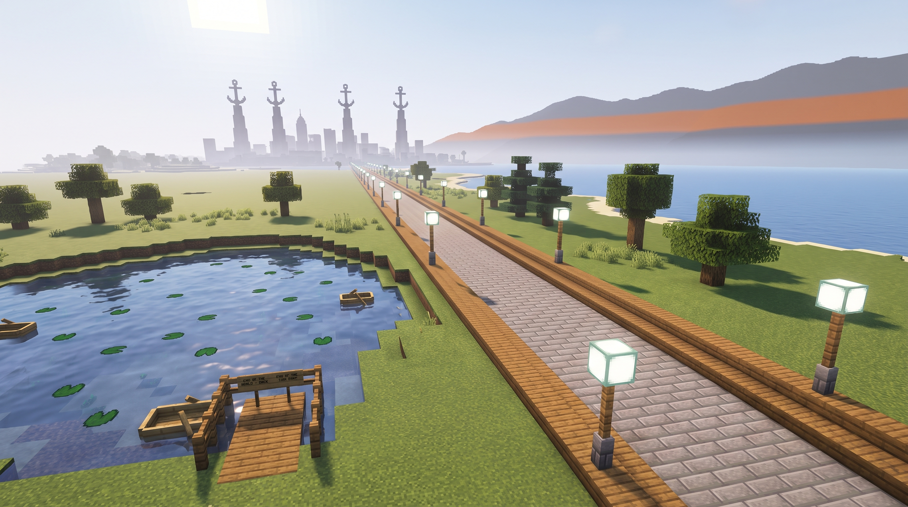
Fig. 10.3 — The coastal plain extending to the world edge. Sparse oak and spruce trees, 30×30 lake with lily pads, small wooden dock, the city skyline and continuous mountain visible on the far horizon. The "you've reached the edge of the build" moment.
11 / The Visitor Journey v2.0 Updated
30–45 minutes of focused play, six stages — all vertical through the mountain
The visitor's journey is a single vertical trajectory through three concentric cultures of human underground use. In v2.0 the journey is all vertical through the mountain — no ravine traversal — and the return is funicular + summit road (no skybridge), with the new summit observation platform as the narrative payoff.
Fig. 11.1 — The full v2.0 visitor journey cross-section. All 4 layers of defense-in-depth visible. The path is a single descending-then-climbing trajectory from the city surface to the deep granite chambers and back. The ascending service tunnel crosses the contact at Y=200. NO skybridge.
The 6-stage inbound journey (v2.0 — all vertical)
City Above (Houston, daytime, retail)
The visitor arrives on the coastal-plain highway, walks the city streets, finds the T-marker at the curb. Daylight, heat, the noise of a downtown. The T-marker is the visual signature of the world's civilian underground. The continuous mountain is visible to the north with a horizontal color line at Y=200. ~5 min
Public Shaft Descent (city → SubTropolis, 7×7, 100 blocks)
The visitor enters the Combined Complex Transit Hub plaza, takes the mechanical lift down 100 blocks. The walls transition from gray concrete to smooth stone to calcite. At Y=−50, the mid-landing observation room with its 3×3 glass window. ~3 min (lift) or ~5 min (stair)
SubTropolis (climate-controlled, working, the column grid)
The visitor emerges at the SubTropolis lobby, walks Hushpuckney Avenue past the Hunt Hall plaza, the NARA archival center, the USPS stamp fulfillment center, the LightEdge data center, the 200×200 grid of white pillars. ~10 min
Service Tunnel (ASCENDING through the contact, minecart rail, 120 blocks)
The visitor boards a minecart at the SubTropolis sub-basement gate (X=−100, Y=0, Z=−300), rides the 6×6 service tunnel upward through the mountain on a 3.33:1 grade, crosses the horizontal contact at Y=200 at the midpoint (the breccia strip on the floor, the composite terrane plaque in the 3×5 alcove on the granite wall), and arrives at the 25-ton blast door at the Cheyenne outer portal (X=0, Y=200, Z=−420). The "you are traveling through 800 million years of geology" moment. ~3 min (minecart)
Cheyenne (deep granite, military, the spring-mounted buildings)
The visitor passes through the 25-ton blast door, walks the J-curve access tunnel (800 blocks per the 01-masterplan), emerges in the chamber with 1,319 springs, 15 buildings, the Combat Operations Center, the Air Defense Operations Center, the medical clinic, the Granite Inn bar. ~10 min
Return (funicular + summit road — NO skybridge)
The visitor returns to the surface: funicular from the Cheyenne outer portal (Y=200) up the granite face to the summit station at Y=800 (~5 min), then the new summit observation platform (the 7th centerpiece, the 360° view), then paved switchback road down the south face to the city (~8 min). Total return ~13 min. NO skybridge.
Journey timing
Stage
From → To
Distance
Mode
Duration
1. City surface
Coastal plain → city center → Houston tunnel entry
Dramatic arc: civilian (Houston) → climate-controlled civilian (Houston tunnel) → mixed civilian/industrial (public shaft) → industrial (SubTropolis) → service/mixed (ascending sub→Cheyenne tunnel) → military (Cheyenne J-curve + chamber) → civilian surface return. The arc resolves back to civilian on the surface, completing the defense-in-depth cycle.
Geological arc (v2.0): no rock (city) → 270 Ma limestone → crosses horizontal contact at Y=200 → 1.08 Ga granite. The visitor rides through 800 million years of geology in 30–45 minutes — and the crossing is now inside the service tunnel at the contact crossing, not at the bottom of a ravine.
Historical arc: 1970s Houston → 1964 SubTropolis → 1966 Cheyenne. The deeper you go, the older the site. Depth is the temporal axis compressed into a vertical axis.
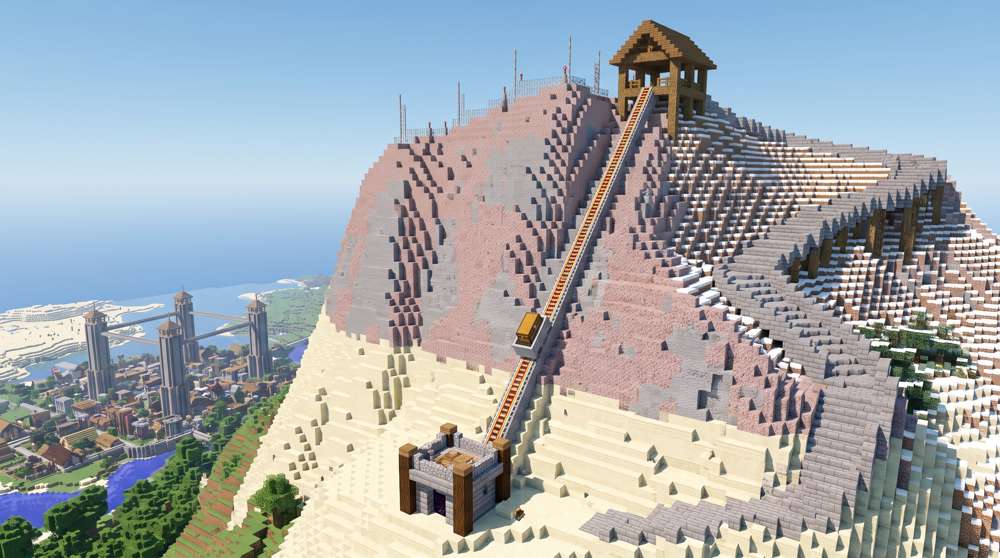
Fig. 11.2 — The v2.0 return route: funicular from the Cheyenne outer portal (Y=200) up the granite face to the summit station at Y=800, then paved switchback road down the south face to the city. NO skybridge. The horizontal contact is visible on the mountain as a color line. The 2-mode return replaces the previous design's skybridge + road return.
12 / The 7 Centerpieces v2.0 — summit platform added
The defining architectural objects (one more than v1.0)
The combined complex has 7 architectural centerpieces in v2.0: 3 non-negotiable + 3 architectural-object surface entrances + 1 new summit observation platform. Each is a moment the player encounters and remembers. The 7th (summit platform) replaces the v1.0 skybridge as the return-route payoff — the skybridge existed only to span the (now-deleted) ravine.
3 non-negotiable centerpieces
CENTERPIECE #1
25-ton Blast Door
3 ft steel, 20 ft tall, on a side branch, in the real Cheyenne style. Visible from the approaching minecart as a 1-block dark patch that grows to a wall of iron. The Cheyenne moment.
@ (0, 200, −420) — Cheyenne outer portal, contact elevation, south face of continuous mountain
CENTERPIECE #2
Mid-level Observation Landing
7×7 room at Y=−50, 3×3 glass window looking out at a G-Cans-style concrete pillar in the city's utility corridor. The G-Cans moment. The breath between the two halves of the descent.
@ (+60, −50, −70) — public shaft, mid-vertical
CENTERPIECE #3
Composite Terrane Plaque (v2.0 — at contact crossing)
1×2 carved-stone plaque with 6 oak signs, lit by a single redstone lamp, in a 3×5 alcove in the upper (granite) wall at the service tunnel contact crossing. 1-block breccia strip on the floor. The Telling Detail — geology as architecture. v2.0: at the service tunnel contact crossing, NOT at the ravine bottom.
@ (−40, 200, −360) — service tunnel contact crossing (was: ravine bottom in v1.0)
7×7 glass-and-steel pavilion in a 20×20 stone-brick plaza. Glass walls on three sides, guard booth, turnstile, "SubTropolis — Public Access" sign, T-marker at the curb, "EMPLOYEE ENTRANCE / EMERGENCY EGRESS" dual-use sign. The first surface entrance the player encounters.
@ (+60, 0, −70) — Combined Complex Transit Hub plaza
CENTERPIECE #5
SubTropolis Horizontal Portal
4×5 opening in the limestone flank of the continuous mountain, "Hunt Midwest SubTropolis — Authorized Vehicles" sign, vehicle gate, paved road switchbacking down. "World's Largest Underground Business Complex" subtitle (Easter egg #5). The "drive-in" face of the industrial cathedral.
@ (0, 0, −300) — south face of mountain, in limestone, at city level (Y=0)
CENTERPIECE #6
Cheyenne Outer Portal
Concrete-and-granite entry on the south face of the continuous mountain at the contact elevation (Y=200), with the 25-ton blast door, a 4-block concrete-and-granite checkpoint corridor, guard booth, "U.S. Space Force — Authorized Personnel Only" sign. The "you can see it but you can't enter without authorization" feel. v2.0: at the contact elevation, NOT at the north wall of a ravine.
@ (0, 200, −420) — south face of continuous mountain, in granite, at contact elevation
1 NEW non-negotiable centerpiece NEW v2.0
CENTERPIECE #7 — NEW
Summit Observation Platform at Y=800
10×10 oak-plank platform with a 3-block-tall spruce-fence railing, 3×3 oak sign panel on a 1-block stone-brick pedestal reading "THREE SITES, ONE MOUNTAIN" with sub-text listing Cheyenne, SubTropolis, Houston Tunnels. 360° panoramic view of the continuous mountain (the horizontal contact visible as a color line), the city in the valley, the flat grass-block coastal plain. v2.0: replaces the v1.0 skybridge as the return-route payoff.
@ (0, 800, −500) — granite summit, on top of the summit station
Build order, in priority
25-ton blast door at the Cheyenne outer portal (~150 blocks total)
Mid-level observation landing at Y=−50 (~250 blocks total)
Composite terrane plaque at the service tunnel contact crossing (~120 blocks total) v2.0: location changed
Surface entrance to the public shaft (~200 blocks total)
SubTropolis horizontal portal (~500 blocks total, including the switchback)
Cheyenne outer portal (~250 blocks total, including the corridor)
Summit observation platform at Y=800 (~100 blocks total) v2.0: NEW
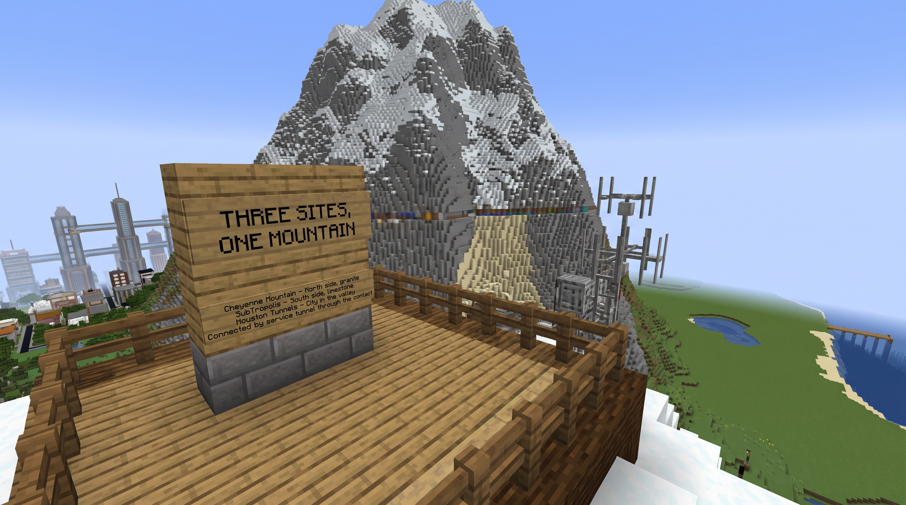
Fig. 12.1 — The summit observation platform at Y=800 (v2.0 — 7th centerpiece, NEW). 10×10 wooden platform with a spruce-fence railing, "THREE SITES, ONE MOUNTAIN" sign, 360° view of the continuous mountain, the city, and the coastal plain. The narrative payoff of the return route. Replaces the v1.0 skybridge.
13 / The 9 Easter Eggs v2.0 Updated
Passive references that reward the curious player
All 9 easter eggs are passive (signs and blocks, not interactive) and are findable but not on the main path. They cite real-world precedents and reinforce the integration story without distracting from the build. In v2.0, the composite terrane plaque is at the service tunnel contact crossing (was at the ravine bottom in v1.0) — the v1.0 "ravine bottom plaque" specific placement is removed.
EASTER EGG #1
Composite Terrane Plaque (v2.0 — at contact crossing)
At the service tunnel contact crossing, 1×2 carved-stone plaque (chiseled calcite + chiseled stone brick), 6 oak signs with the geological text, lit by a redstone lamp. The build's Telling Detail. Doubles as centerpiece #3. v2.0: at the service tunnel contact crossing, not at the ravine bottom.
@ (−40, 200, −360) — service tunnel contact crossing
EASTER EGG #2
"Three Sites, One Mountain" Sign
3×3 oak sign panel on a 1-block stone brick pedestal at the granite summit (next to the new summit observation platform). Lists: Cheyenne, SubTropolis, Houston Tunnels, Combined by horizontal contact crossing. The strongest single easter egg — ties the build to the three real-world precedents in one place.
@ (0, 800, −500) — granite summit, next to summit observation platform
EASTER EGG #3
Gotthard-Inspired Sign (with record holder named)
"Service Tunnel — Inspired by the Gotthard Base Tunnel (57.09 km, Switzerland, opened 2016) / SubTropolis–Cheyenne Service Tunnel: 0.12 km — not the longest, but the most climbed." Subtle "SBB CFF FFS" Swiss Federal Railways logo on chiseled calcite at the SubTropolis end of the service tunnel.
@ (−100, 0, −300) — SubTropolis end of service tunnel
EASTER EGG #4
Helsinki-Inspired Sign
"Public Shaft — Inspired by the Helsinki Underground Master Plan / 90 dual-use facilities, 5,500 civil-defense shelters, 1 million people capacity." Subtle "HELSINKI 5,500" carving on chiseled stone brick at the bottom of the public shaft.
@ (+60, −95, −100) — bottom of public shaft
EASTER EGG #5
"World's Largest Underground Business Complex"
Oak sign at the SubTropolis horizontal portal, below the "Hunt Midwest SubTropolis" sign. The real SubTropolis trademark; honest reference.
@ (0, 0, −300) — SubTropolis horizontal portal
EASTER EGG #6
"U.S. Space Force — Authorized Personnel Only"
Oak sign at the Cheyenne outer portal. The real Cheyenne security signage (the facility is currently in "warm standby" as the Alternate Joint Operations Center for NORAD/USNORTHCOM, with Space Base Delta 1 as caretaker).
@ (0, 200, −420) — Cheyenne outer portal
EASTER EGG #7
Houston T-marker
1-block red wool on white concrete at the city tunnel entries and the public shaft entrance. The visual signature of the world's civilian underground. A Houstonian would recognize it.
@ (+60, 0, −70), Wells Fargo, McKinney Garage
EASTER EGG #8
Thrust-Fault Breccia Strip (v2.0 — in service tunnel floor)
1-block-wide cobblestone + calcite strip on the floor of the service tunnel at the contact crossing. The player rides across the contact in the minecart even without noticing. v2.0: in the service tunnel floor (was in the ravine floor in v1.0).
@ (−40, 200, −360) — service tunnel contact crossing, floor
EASTER EGG #9
Rock Identification Chart (v2.0 — at summit)
3-block display at the granite summit, with item frames on three blocks: Pikes Peak granite (1.08 Ga, Proterozoic), Bethany Falls limestone (270 Ma, Pennsylvanian), and thrust-fault breccia (mixed rock at the contact). The geological teaching moment for the curious player at the summit.
@ (+10, 805, −500) — granite summit, near "Three Sites" sign and observation platform
Deferred to v3+ (per Decision 7): hidden rooms, NPCs (Sandra Lord the Tunnel Lady, the funicular operator), mushroom farm in the SubTropolis sub-basement, Wizard of Oz reference (yellow brick road paint, "Somewhere Over the Rainbow" sign, small vault door). These are not v2.0 scope.
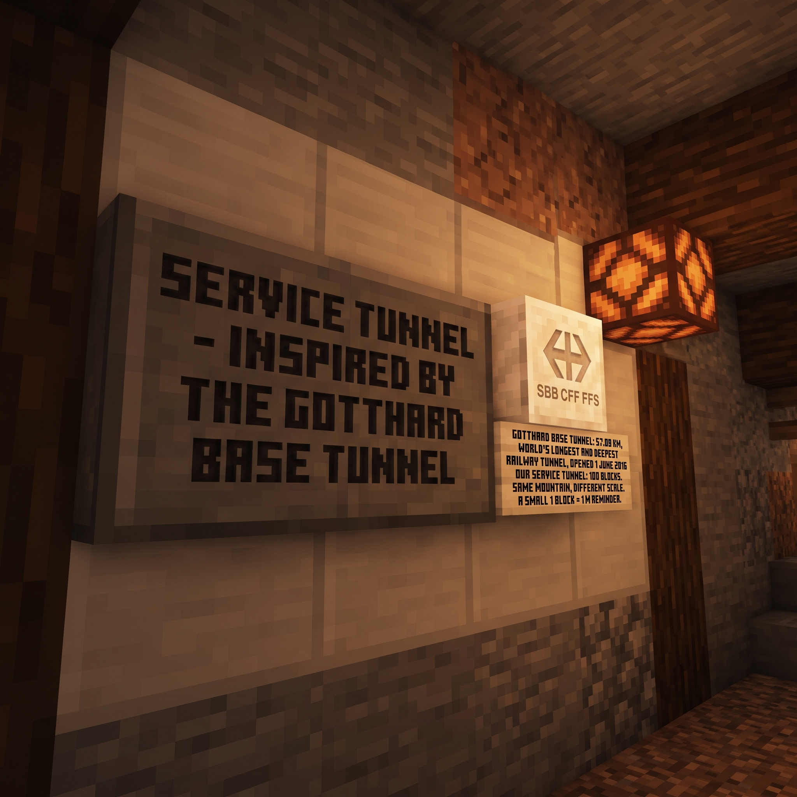
Fig. 13.1 — The Gotthard-inspired sign (Easter egg #3). 1-block carved-stone with the "SBB CFF FFS" Swiss Federal Railways logo at the SubTropolis end of the service tunnel.
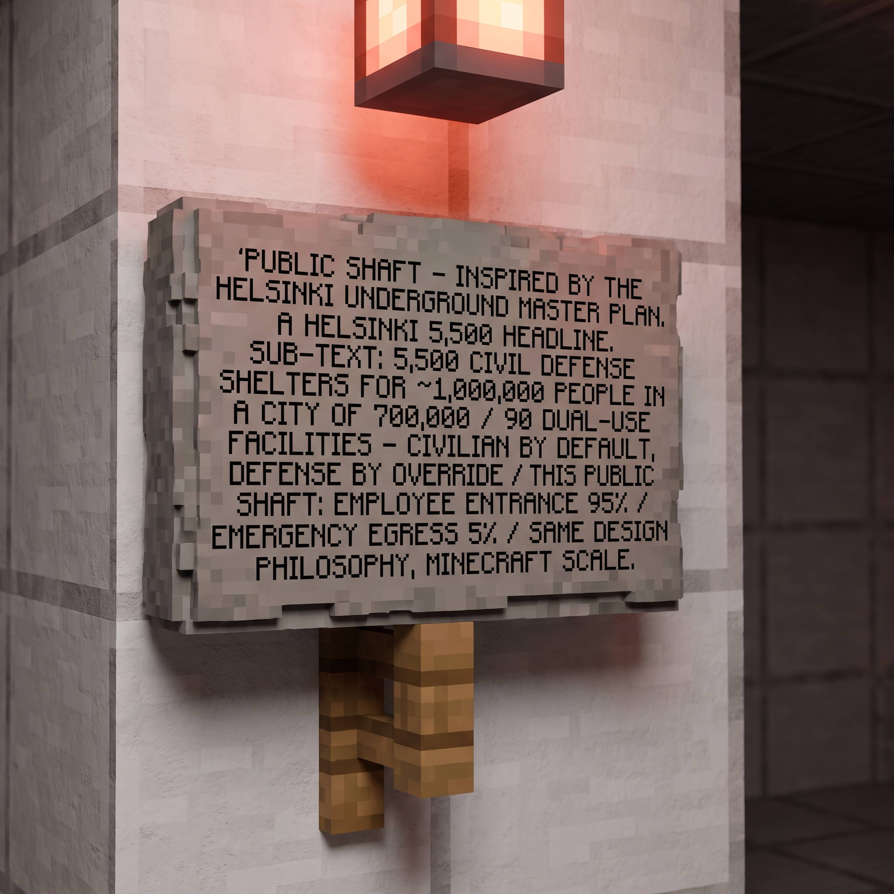
Fig. 13.2 — The Helsinki-inspired sign (Easter egg #4). 1-block carved-stone with "HELSINKI 5,500" — the number of civil defense shelters in Helsinki for ~1 million people in a city of 700,000.
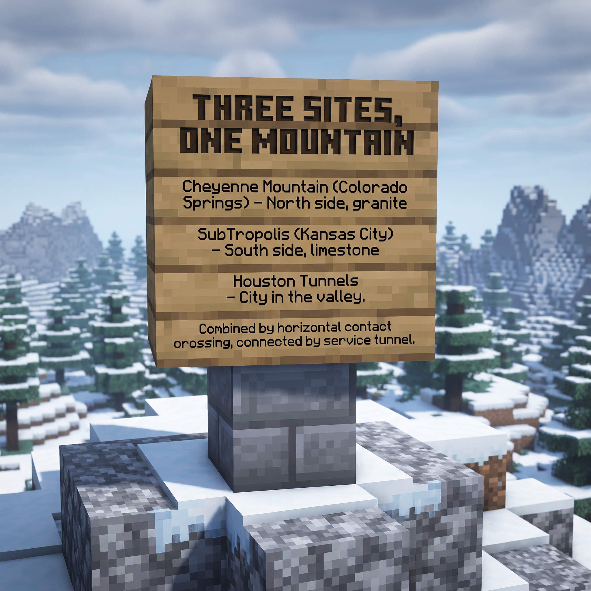
Fig. 13.3 — The "Three Sites, One Mountain" sign (Easter egg #2). 3×3 oak sign panel at the granite summit. The strongest single easter egg — ties the build to the three real-world precedents in one place.
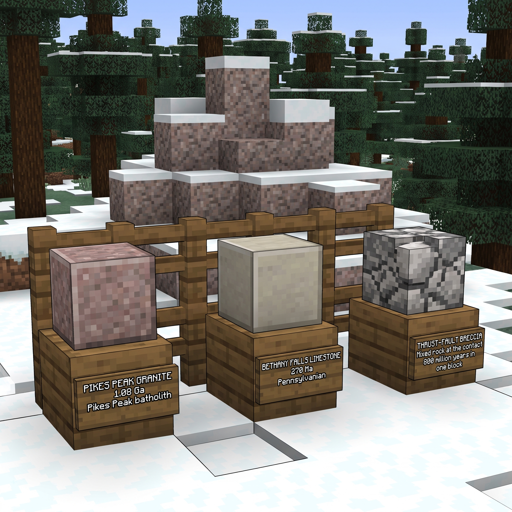
Fig. 13.4 — The rock identification chart (Easter egg #9). 3-block display at the granite summit, with item frames on three blocks. The world's three rock types displayed side by side.
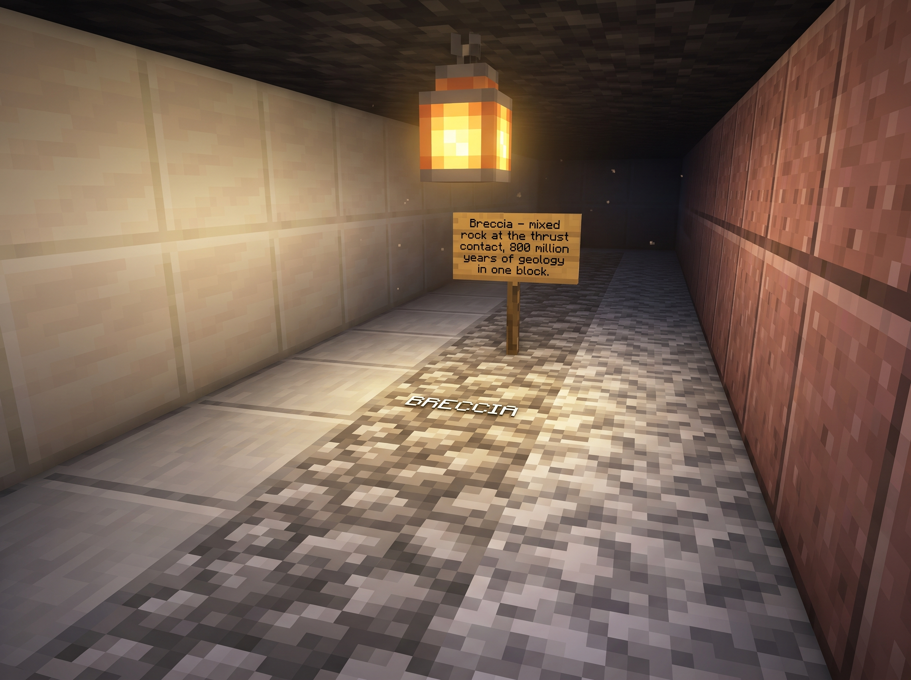
Fig. 13.5 — The thrust-fault breccia strip (Easter egg #8, v2.0). 1-block-wide strip of mixed cobblestone and calcite in the service tunnel floor at the contact crossing. The minecart rolls across the contact even without the player noticing.Fig. 13.6 — The summit observation platform (v2.0 — new 7th centerpiece, with the "Three Sites, One Mountain" sign). 10×10 wooden platform at Y=800 with a 360° panoramic view. Replaces the v1.0 skybridge as the return-route payoff.
14 / AI Contractor Brief v2.0 No-Ravine
READ THIS TO BUILD
Why this section is here
This section preserves the normalized v2.0 contractor brief. It is a local architectural contract, not an executable current-world package. Apply AUTHORITY.md, then use Masterplan 05 for world placement and delivery gates. The 3 individual site contractor briefs live in 01-cheyenne-mountain-complex/06-contractor/, 02-subtropolis/06-contractor/, and 03-houston-tunnel-system/06-contractor/; they own in-site geometry. No world edits are authorized.
1. Project Header
Build name
Combined Complex (no-ravine rework)
Build ID
04-combined-complex
Version
2.0 — no-ravine design
Global scale
1 block = 1 meter everywhere (Discussion Decision 1)
Vertical exception
Granite peak at Y=800 represents a 2:1 vertical compression of real 2,915 m Pikes Peak. All other dimensions are 1:1.
World footprint
1,500 × 1,500 horizontal, 800 vertical (Y = 0 to 800, with build extending to Y = −100)
Build height required
≥ 1,024 blocks
Build height recommended
≥ 2,048 blocks
Mod
CubicWorld (or equivalent with ≥ 2,048-block build height). Vanilla 384 is insufficient.
Custom (flat at Y = 0; world generated as a 1,500 × 1,500 horizontal plane)
Predecessor briefs
The 3 individual sites already have contractor briefs in their respective 04-contractor/ folders. This brief is the integration layer.
This brief covers the integration layer only. It is the adhesive between the 3 sites. Internal geometry of the Cheyenne chamber, SubTropolis pillar grid, and Houston tunnel sample is owned by the 01–03 briefs and is not re-specified here.
2. Build Targets
2.1 Block budget (rough count by phase)
Phase
New blocks (inter-site layer)
Source
1 — Site prep
~50,000
working-plan §2
2 — Continuous mountain + contact ring
~1,650,000
700k granite + 950k limestone (no ravine to carve out)
7 — Service tunnel (horizontal centerpiece, ASCENDING)
~4,000
new schematic piece, 120 blocks, 3.33:1 grade
8 — 25-ton blast door + composite terrane plaque
~1,000
centerpieces finalized
9 — Funicular + summit road (return route)
~15,000
~10k funicular rail + ~5k road switchback
10 — Summit observation platform (new 7th centerpiece)
~500
wooden platform + 360° view
11 — Finishing (easter eggs + lighting + signage)
~5,000
9 easter eggs, lighting tune, polish
Subtotal — inter-site + envelope
~3,560,000
sum of all phases
The 3 individual site masterplans add another ~2.1M blocks. Grand total: ~3.5M placed blocks for the full v2.0 build.
2.2 Time estimate
Per phase: see working-plan §2.
Total integration layer (phases 1–11): ~60–90 hours of build time (≈ 60% bot time, 40% human time).
Calendar time at 4 hr/day: 3–4 weeks for v2.0.
MVP (v0.1 "The World") only: 20–30 hours / ~1 week. The MVP is the continuous mountain, the city, the coastal plain, the summit station, and the surface contact ring. No public shaft, no service tunnel, no plaque in the MVP — those arrive in v1.5.
World size: 1,500 × 1,500 = ~93 × 93 chunks at 16-block chunks. Loaded chunks at view-distance 16: ~32 × 32 = 1,024 chunks. Manageable on standard hardware.
Build height: requires CubicWorld. The build uses Y = −100 to Y = 800. First-spawn world load: 30–60 s.
2.4 Quality acceptance criteria
Silhouette reads from 1 mile away: ONE continuous mountain with a pink-grey granite cap above the contact at Y = 200, cream-grey limestone below. No V-notch, no ravine, no two-peak split.
The horizontal contact at Y = 200 is visible as a 1–2 block color-change ring on the mountain's south face for the full 800-block E–W extent.
The 7 centerpieces are all present at their exact coordinates (25-ton blast door, mid-landing, composite terrane plaque, surface pavilion, SubTropolis horizontal portal, Cheyenne outer portal, summit observation platform).
The 9 easter eggs are all findable but not all on the main path.
The full visitor journey (coastal plain → Grand Avenue → city → public shaft → SubTropolis → service tunnel → blast door → J-curve → chamber) is traversable in 30–45 minutes of focused play.
The 2-mode return (funicular → granite summit → summit road → city plaza) takes ~13 minutes.
The service tunnel walls visibly transition from cream limestone to pink granite at the contact crossing, with the breccia strip on the floor.
The public shaft lighting visibly transitions from cool blue/gray (concrete, top) to warm cream (calcite, bottom) over 100 blocks.
The 25-ton blast door is visible from the approaching minecart at the end of the service tunnel.
The composite terrane plaque is readable at the service tunnel contact crossing at (−40, 200, −360) — geologically honest (at a real geological boundary, not narrative fiction).
3. Coordinate System
World origin (0, 0, 0)
Center of the city, at ground level (sea level reference)
Compass
north = −Z, east = +X, up = +Y (Minecraft convention)
Mountain range
North (Z = −800 to −200), 800 × 600 horizontal footprint
City
Centered on origin (X = −69 to +69, Z = −69 to +69), 138 m × 138 m
Coastal plain
East and south (X = +200 to +750, Z = +100 to +700)
Build Y range
Y = −100 (SubTropolis floor) to Y = 800 (granite peak summit)
Horizontal contact
Y = 200 (binding — the granite-limestone contact across the entire mountain)
Contract: The X axis is east-west (positive east), the Z axis is north-south (positive south = +Z, north = −Z), the Y axis is up. The mountain range is north (negative Z). The coastal plain is south and east. The city is at the origin. The SubTropolis is below the city (Y = −100 to Y = 0). The Cheyenne chamber is inside the granite at Y = 250–400. The horizontal contact is at Y = 200 — a single fixed Y across the entire mountain, no exceptions. An off-by-1-block is a defect. An off-by-axis is a disaster.
Pink-grey Pikes Peak syenogranite (1.08 Ga). Spruce + dark-oak forest on lower slopes, snow line Y = 700 to 800, antenna arrays on ridgeline, summit station + observation platform at (0, 800, −500).
Contact crossing band
Y = 199 to Y = 201
Mixed cobblestone + calcite + diorite (breccia) at surface; polished diorite over smooth stone in tunnel walls
The geological signature. Visible as a horizontal ring on the south face. Crossed by the service tunnel at (−40, 200, −360) where the composite terrane plaque lives.
Limestone body
Y = 0 to Y = 200
Smooth stone (cream-grey Bethany Falls limestone, 270 Ma), calcite, sandstone
Visible on the south face. The SubTropolis horizontal portal is at the limestone base (Y = 0, Z = −300). The Cheyenne outer portal is at the contact elevation (Y = 200, Z = −420).
City
Y = 0 to Y = 80
Stone brick, quartz, glass, white concrete
138 × 138 m Houston-style downtown centered on origin. Towers 30–80 blocks tall. Public shaft descent at (60, 0, −70).
Coastal plain
Y = 0 to Y = 5
Grass, sand, oak/birch saplings
The flat, sparse grassland south and east of the city. The Grand Avenue runs N–S at X = +69. World-edge pier at (0, 0, 720).
5. Phase 1 — Site Prep (binding)
Goal: Establish the world footprint, the sky limit, the bedrock buffer, and the basic terrain. Set the world up correctly — every other phase depends on it.
World type
Custom (flat). Single layer of grass blocks at Y = 0, no terrain
Build height
≥ 1,024 blocks (recommend 2,048). Set before placing the first block.
Simulation distance
12 chunks
View distance
16 chunks
World footprint
1,500 × 1,500 blocks (X × Z), centered on origin
Build Y range
Y = −100 to Y = 800 (with sky buffer Y = 800 to Y = 1,024)
Bedrock buffer
Y = −220 and below (custom deepslate/bedrock layer)
Initial terrain
Single layer of grass blocks at Y = 0, sand at Y = 0 at the southern + eastern edges (coastal plain beach)
Footprint markers
1-block stone brick at 4 corners + 4 cardinal midpoints (temporary — remove in Phase 11)
Coordinate axes
X east, Y up, Z south-positive / Z north-negative. Mountain is north (negative Z).
Critical risk: If the world is created with vanilla 384 build-height, the entire build is impossible. Verify before the first block.
6. Phase 2 — Continuous Mountain + Contact Ring (v2.0 — no ravine)
Goal: Build the ONE continuous mountain, NO ravine, with the granite cap (Y = 200 to 800), the limestone body (Y = 0 to 200, continuing to Y = −100 below the city), the horizontal contact at Y = 200 visible as a 1–2 block color-change ring on the south face, the surface features (forest, antenna arrays, snow line), and the placeholder portal openings.
This is a solid landform, not a carve-out. The previous design's V-shaped ravine excavation (one of the highest-risk operations) is removed entirely. Phase 2 is now a placement operation (1,650,000 blocks of rock), not a carve-out operation.
6.1 Limestone body (Y = 0 to Y = 200)
Footprint
X = −400 to +400, Z = −800 to −200 (800 × 600 plan), Y = 0 to 200
Composition
smooth_stone (cream-grey Bethany Falls limestone, 270 Ma) — core; calcite (weathered surface); sandstone (cream, decorative) on the surface. Grass-and-dirt overlay on lower slopes.
Profile
Sloping hillside with visible horizontal bedding planes, exposed strata. Sloping foot at city level (Y = 0), rising to the contact (Y = 200). Gentler than the granite cap.
Forest
oak + birch on lower slopes (Y = 0 to 80); bare rock at treeline (Y = 80 on south face, Y = 100 on north face)
Surface features
Switchback road on the south face (city → SubTropolis horizontal portal, 6 switchbacks over 100 blocks of elevation), SubTropolis horizontal portal placeholder (4×5 opening at (0, 0, −300)), SubTropolis service tunnel gate placeholder at NW corner of chamber (X = −100, Y = 0, Z = −300)
6.2 Granite cap (Y = 200 to Y = 800)
Footprint
X = −400 to +400 (same E–W as the limestone), Z = −800 to −200 (same N–S depth), Y = 200 to 800. Narrower than the limestone body in profile (the granite cap sits on top of the wider limestone base, like a cap on a wider base).
Summit
Y = 800 at (0, 800, −500) — Pikes Peak-style sharp triangle, the apex of the granite intrusion
Steep upper slopes, sharp summit. Steeper than the limestone (granite erodes slower, holds steeper angles).
Forest
spruce + dark_oak on lower slopes (Y = 200 to 500); bare rock at treeline (Y = 500 on north face, Y = 400 on south face)
Snow line
snow on top 100 blocks (Y = 700 to 800); 5-block-wide ice cap at summit
Antenna arrays
3–4 spruce_fence antenna poles on the central ridgeline (Y = 600 to 800), with string "wires" between them (1960s NORAD-style radar). Visible from the city as the only obvious surface feature.
Surface features
Cheyenne outer portal placeholder (6×6 opening at (0, 200, −420)), summit station placeholder (10×10 building at (0, 800, −500)), "Three Sites, One Mountain" sign (Easter egg #2), rock identification chart (Easter egg #9), funicular rail placeholder (1-block-wide rail from summit to (0, 200, −420))
6.3 The contact ring at Y = 200 (v2.0 — the new Telling Detail)
Elevation
Y = 200, a horizontal plane through the entire mountain
Visibility at surface
A 1–2-block-wide transition band ringing the mountain at Y = 200. Material: a 1-block-wide strip of mixed cobblestone + calcite + diorite at Y = 200, visible as a horizontal stripe on the south face. Runs the full 800-block E–W extent of the mountain.
Signage
A single oak_sign at the most prominent point on the ring (south face, visible from the city): "Horizontal Contact — Granite 1.08 Ga over Limestone 270 Ma"
Inside the service tunnel
The contact is exposed in the tunnel walls at the contact crossing (Phase 7) — the lateral position where the minecart ride transitions from limestone walls to granite walls.
6.4 Switchback road (south face, city → SubTropolis horizontal portal)
From
City plaza (X = 0, Y = 0, Z = +69, the NE corner of the city)
To
SubTropolis horizontal portal (0, 0, −300) at city level (Y = 0) on the south face of the mountain
Geometry
6-block-wide asphalt road, switchbacking up the south face of the mountain. 6 switchbacks over 100 blocks of elevation (the road climbs from Y = 0 at the city to Y = 0 at the portal — both ends are at Y = 0; the road switchbacks laterally up the south face and arrives at the portal at city level).
Handrails
oak_fence at outer edge of switchbacks
Surface features
sea_lantern streetlights every 15 blocks, occasional overlooks with views of the city and the coastal plain
7. Phase 3 — City + Houston Tunnel (binding coordinates)
Goal: Build the above-ground city and the Houston tunnel sample. Place the Houston build at the city center coordinates.
Goal: Build the SubTropolis chamber and sub-basement, with the horizontal portal at (0, 0, −300) on the south face of the mountain at city level (NOT at the contact elevation, per the binding site-coordinates.json).
Anchor
X
Y
Z
Description
Chamber footprint
−100 to +100
−100 to 0
−300 to −100
200 × 200 × 100 blocks
Chamber center
0
−50
−200
Public access lobby (SE corner of chamber)
+60
−100
−100
Where the public shaft lands
Horizontal portal (north face of chamber, on south face of mountain)
0
0
−300
4 × 5 block opening at city level (binding)
Service tunnel entrance (NW corner of chamber)
−100
0
−300
Where the minecart rail exits the chamber into the service tunnel
Goal: Build the granite bunker. Place the Cheyenne build at the granite peak coordinates, with the outer portal at (0, 200, −420) on the south face of the mountain at the contact elevation Y = 200 (NOT at the contact crossing in the ravine, since there is no ravine).
Anchor
X
Y
Z
Description
Chamber footprint
−40 to +40
250 to 400
−580 to −500
~80 × 80 × 150 m (4.5 acres of building floor space)
Chamber center
0
325
−540
Outer portal (south face of mountain, in granite, at contact elevation)
0
200
−420
6×6 opening. 25-ton blast door at the contact elevation.
J-curve end (chamber entrance)
0
300
−540
At chamber's south wall
J-curve length
—
—
—
800 blocks along the curved path (inherited from 01-masterplan)
Rock above chamber
1,800+ blocks of solid granite
Y = 250 (chamber floor) to Y = 800 (peak) = 550 blocks (≥ the 549-block minimum)
Blast doors: iron_door (3-block-thick) in quartz_stair frame (industrial green/gray, 20 ft tall)
J-curve walls: 3 character stages: polished_diorite (rough-hewn at portal) → gray_concrete (side branch) → polished_diorite + polished concrete (chamber)
Lighting: sea_lantern every 6 blocks (chamber, light level 12) + redstone_lamp every 8 blocks (J-curve, light level 8–10)
10. Phase 6 — Public Shaft (vertical centerpiece)
Goal: Build the 7×7 cross-section, 100-block descent, mechanical lift + emergency stair + service chase that connects the city surface to the SubTropolis floor. The public shaft is the first of the two architectural centerpieces — the civilian transition.
This phase is the highest-risk phase in the entire build. The public shaft is the build's defining feature. A mistake here breaks the visitor journey. Measure twice, place once.
Cross-section
7 × 7 blocks total
Inner lift core
5 × 5 blocks (the mechanical lift)
Outer ring (west side)
1-block-wide emergency stair (oak_stairs spiraling around oak_fence post), visible through glass_pane
Verification: Cross-section is exactly 7×7 (5×5 lift + 1-block stair + 1-block chase). Shaft is purely vertical (no curves), 100 blocks. Surface pavilion has 3 glass walls, guard booth, turnstile, T-marker, dual-use sign. Mid-landing window (3×3 glass) looks out at the utility corridor. Wall material visibly transitions from gray concrete (top) to smooth stone to calcite (bottom).
11. Phase 7 — Service Tunnel (horizontal centerpiece, v2.0 ASCENDING)
Goal: Build the 6×6 cross-section, 120-block ASCENDING inclined minecart bore that connects the SubTropolis sub-basement (south face of mountain, Y = 0, in limestone) up through the horizontal contact at Y = 200 (at the contact crossing) to the Cheyenne outer portal (south face of mountain, Y = 200, in granite). The tunnel is now CLIMBING, not flat-under-a-ravine. The service tunnel is the second of the two architectural centerpieces — the inter-site transition.
Cross-section
6 × 6 blocks total
Inner rail corridor
4 × 4 blocks (1-block gauge minecart rail + 1-block clearance on each side)
1-block walkway for personnel evacuation, yellow_wool stripe on floor
Length
120 blocks (SubTropolis end to Cheyenne end)
Path
From SubTropolis NW corner (−100, 0, −300) → climbing through the mountain (in the limestone) on a 3.33:1 grade → reaching the contact elevation Y = 200 at the contact crossing (~block 60, at (−40, 200, −360)) → continuing laterally in the granite at Y = 200 → arriving at the Cheyenne outer portal (0, 200, −420)
Climb profile
0 to 60 blocks (SubTropolis end to contact crossing): climb from Y = 0 to Y = 200 (3.33:1 grade, very steep, powered rails every 4 blocks). Walls are cream limestone. 60 to 120 blocks (contact crossing to Cheyenne end): lateral at Y = 200. Walls transition from cream limestone to pink granite at the contact crossing. Remaining 55–60 blocks are in the granite.
Alignment
Straight (per Decision 4). The 6×6 cross-section is uniform from end to end; only the wall material and lighting change.
Mode
Minecart rail (1-block gauge, single track, powered rail every 4 blocks in the climbing section)
Location
X
Y
Z
Description
Service tunnel start — SubTropolis end
−100
0
−300
NW corner of SubTropolis sub-basement. "U.S. Space Force — Authorized Personnel Only" sign, 1-block iron_bars security gate, iron_bars turnstile. Easter egg #3 ("Service Tunnel — Inspired by the Gotthard Base Tunnel" + "SBB CFF FFS" Swiss Federal Railways logo on chiseled_calcite). Paved road (asphalt, 6 blocks wide) from sub-basement to gate.
Limestone section
−100 to −40
0 to 200
−300 to −360
First ~60 blocks. Climbing at 3.33:1 grade. Walls: smooth_stone (cream-grey limestone). SubTropolis fluorescent (light 10). Utility strip: light blue wool (water), red wool (power), white wool (fiber-optic). Yellow wool stripe on south face of 6×6 (emergency-escape corridor). Powered rail every 4 blocks.
Contact crossing (centerpiece #3, THE GEOLOGICAL MOMENT)
−40
200
−360
At the contact elevation, where the tunnel walls transition from cream limestone to pink granite. The composite terrane plaque is here (Easter egg #1). 1–2 blocks of thrust-fault breccia (mixed granite-and-limestone rubble) visible in the tunnel walls. Plaque text: "Thrust Fault Contact — Pikes Peak Granite (1.08 Ga) overthrust on Bethany Falls Limestone (270 Ma). The contact is exposed at the surface on the south face of the mountain at Y = 200, and crossed by this tunnel."
Granite section
−40 to 0
200
−360 to −420
Last ~60 blocks, lateral at Y = 200. Walls: polished_diorite (pink-grey granite). Utility strip: gray wool (water), black wool (power), red wool (fiber-optic). Ceiling: polished_diorite_slab (self-supporting). Light 10.
Service tunnel end — Cheyenne outer portal (centerpiece #6)
0
200
−420
6×6 opening in the granite, 4-block concrete-and-granite checkpoint corridor, 25-ton blast door (centerpiece #1), guard booth, "U.S. Space Force" sign, "Beyond this door" signs. Beyond: J-curve access tunnel.
Critical risks: Tunnel alignment must match the SubTropolis sub-basement gate (NW corner at −100, 0, −300) and the Cheyenne outer portal (0, 200, −420). Grade alignment: the 3.33:1 grade must be continuous — Y must increase by exactly 200 blocks over 60 blocks of horizontal travel. Powered rail density: 4-block spacing exactly. Contact crossing alignment: the contact crossing is at the midpoint of the tunnel, at Y = 200 — must align with the surface contact ring at Y = 200.
(X = −40, Y = 200, Z = −360) — inside the service tunnel at the contact crossing (NOT at a ravine bottom, since the ravine has been dropped)
Alcove
3×5×3 blocks carved into the upper (granite) wall of the 6×6 at the contact crossing
Alcove floor
smooth_stone_slab
Alcove side walls + ceiling
polished_diorite
Plaque
1×2 carved-stone marker on the alcove back wall: left block = chiseled_calcite (limestone half, 270 Ma), right block = chiseled_stone_bricks (granite half, 1.08 Ga)
Plaque text
6–7 oak signs on the alcove wall, black text on white: Line 1 (large): "COMPOSITE TERRANE" Line 2: "The granite above this alcove is 1.08 Ga Pikes Peak granite." Line 3: "The limestone below is 270 Ma Bethany Falls limestone." Line 4: "They are in horizontal contact at this elevation, where" Line 5: "the granite pluton pushed up through the limestone." Line 6: "In real mountain ranges (the Alps, the Appalachians, Glacier National Park)," Line 7: "this is a common geological feature."
Breccia strip on tunnel floor
1-block-wide strip of mixed cobblestone + calcite, 1 block tall × 6 blocks long, at the contact crossing (Easter egg #8 — co-located with Easter egg #1)
Lighting
1 redstone_lamp on the alcove ceiling (light 8, the dimmest point in the tunnel)
Geological honesty
The plaque is at a REAL geological boundary, not narrative fiction. The horizontal granite-limestone contact is exposed at the surface (the contact ring at Y = 200 on the south face) and crossed by the service tunnel (the contact crossing at Y = 200).
13. Phase 9 — Funicular + Summit Road (the Return Route, v2.0 — NO SKYBRIDGE)
Goal: Build the 2-mode surface return from the Cheyenne outer portal back to the city — funicular from the portal at Y = 200 up to the granite summit at Y = 800, then a paved switchback road down the south face to the city plaza. NO SKYBRIDGE (the skybridge was for spanning the ravine, which no longer exists).
13.1 The funicular (Stage 1 of return)
From
(0, 200, −420) — Cheyenne outer portal
To
(0, 800, −500) — Granite summit station (built in Phase 2)
Elevation gain
600 blocks
Lateral distance
~400 blocks
Grade
2:1 (steep, similar to Swiss funiculars)
Mode
Funicular rail (1-block gauge, single track, powered rail every 4 blocks)
Path
A rail on the east or west face of the granite intrusion, climbing 600 blocks over ~400 blocks of lateral distance. Single track with a passing loop at the midpoint.
Vehicle
A single minecart with chest (the funicular car) at the top of the rail
Stations
Small station at the outer portal (oak_fence + sign "Funicular — Cheyenne to Summit / ~5 min ride") and a small station at the summit (built in Phase 2 with the "Three Sites" sign and rock ID chart)
Duration
~5 min (the funicular climb is the first 5 minutes of the ~13-min return)
13.2 The summit road (Stage 2 of return)
From
(0, 800, −500) — Granite summit station
To
(0, 0, 0) — Combined Complex Transit Hub plaza, or (60, 0, −70) — the public shaft entrance
Elevation loss
800 blocks
Lateral distance
~800 blocks
Switchbacks
6 switchbacks over 800 blocks of elevation, each switchback a 30-block horizontal traverse on a 5-block-wide shelf cut into the south face of the mountain
Mode
Walk, horse, or vehicle (cart on rails) on a paved stone_brick road
Width
6 blocks
Handrails
oak_fence at outer edge of switchbacks
Surface features
sea_lantern streetlights every 20 blocks, occasional overlooks with views of the city and the coastal plain, "CONTACT RING AHEAD" sign at Y = 200 (the surface expression of the contact)
Duration
~8 min (the summit road is the second 8 minutes of the ~13-min return)
14. Phase 10 — Summit Observation Platform (the new 7th centerpiece, v2.0)
Goal: Build a small wooden platform with a 360° view of the mountain range, the city, and the coastal plain at the granite summit. The platform is the new 7th centerpiece of the build, complementing the 6 centerpieces of the integration layer.
Position
(0, 800, −500) — at the granite summit, on top of the summit station building
Footprint
7×7 to 11×11 block wooden platform on top of the summit station
Material
oak_planks (floor) + spruce_fence (handrails, 1-block tall on all sides) + oak_stairs (corner accents)
Features
A single oak_sign at the center: "Combined Complex — 800 m above sea level, 1.08 Ga granite"
The "Three Sites, One Mountain" sign
Already in place from Phase 2 (Easter egg #2). The 3×3 oak sign panel + 5-line text at the platform.
The rock identification chart
Already in place from Phase 2 (Easter egg #9). The 3-block display with item frames.
View
360° view of: the mountain range (pink-grey granite cap, cream-grey limestone body, contact ring at Y = 200), the city (138 × 138 m downtown, towers 30–80 blocks tall), the coastal plain (flat grassland, Grand Avenue, small lake, world-edge pier), the SubTropolis horizontal portal (visible at the base of the south face), the Cheyenne outer portal (visible at the contact elevation on the south face)
Goal: Finalize the build — the 9 easter eggs, the lighting tuning, the signage review, the visitor journey timing test, the cleanup of temporary markers.
15.1 The 9 easter eggs (binding coordinates, v2.0)
#
Easter egg
Coordinates
Description
1
Composite terrane plaque
(−40, 200, −360)
Inside the service tunnel at the contact crossing (v2.0 — was at the ravine bottom in v1.0). The build's Telling Detail — geology as architecture.
2
"Three Sites, One Mountain" sign
(0, 800, −500)
5-line sign on stone brick pedestal at the granite summit (next to the new summit observation platform)
3
Gotthard-inspired sign
(−100, 0, −300)
Oak sign + "SBB CFF FFS" Swiss Federal Railways logo on chiseled calcite at the SubTropolis end of the service tunnel
4
Helsinki-inspired sign
(+60, −95, −100)
Oak sign + "HELSINKI 5,500" carved on chiseled stone brick at the bottom of the public shaft
5
"World's Largest Underground Business Complex"
(0, 0, −300)
Oak sign at the SubTropolis horizontal portal
6
"U.S. Space Force — Authorized Personnel Only"
(0, 200, −420)
Oak sign at the Cheyenne outer portal
7
Houston T-marker
(+60, 0, −70)
Red wool on white concrete at the public shaft entrance curb (plus Wells Fargo + McKinney Garage)
8
Thrust-fault breccia strip
(−40, 200, −360)
1-block-wide cobblestone + calcite strip on the floor of the service tunnel at the contact crossing (v2.0 — was in the ravine floor in v1.0)
9
Rock identification chart
(+10, 805, −500)
3-block display with item frames on 3 blocks at the granite summit
15.2 Lighting tuning (binding — per design-plan §9)
Zone
Primary light
Density
Mood
City surface (above ground)
Natural daylight
Full (no ceiling)
Bright, hot, busy
Houston tunnel
sea_lantern
Every 6 blocks along ceiling
Fluorescent, climate-controlled
Public shaft (top half)
redstone_lamp
Every 8 blocks on wall
Cool blue-grey, fluorescent (light 12)
Public shaft (mid-landing)
Redstone lamp + 3×3 glass
1 lamp + 3×3 glass
The G-Cans moment (light 12)
Public shaft (bottom half)
Redstone lamp
Every 8 blocks on wall
Warm cream, fluorescent (light 12)
SubTropolis chamber
Sea lantern
Every 8 blocks along ceiling
Bright fluorescent (light 12)
SubTropolis sub-basement
Redstone lamp
Every 8 blocks on wall
Dimmer than main chamber
Service tunnel (limestone half)
Redstone lamp
Every 8 blocks on wall
Dimmer, cream-tinted (light 10)
Service tunnel (contact crossing)
Redstone lamp
1 lamp at the contact (in the alcove ceiling)
Dimmest point (light 8)
Service tunnel (granite half)
Redstone lamp
Every 8 blocks on wall
Slightly brighter, pink-tinted (light 10)
Cheyenne outer portal (checkpoint)
Sea lantern
Every 4 blocks (bright)
Cool fluorescent, institutional
Cheyenne J-curve (rough-hewn)
Redstone lamp
Every 8 blocks on wall
Dim, pink-grey (light 8)
Cheyenne J-curve (side branch)
Sea lantern
Every 6 blocks along ceiling
Brighter, gray, institutional (light 10)
Cheyenne chamber
Sea lantern
Every 6 blocks along ceiling
Bright fluorescent, climate-sealed (light 12)
Summit station + observation platform
Natural daylight
Full (open to sky)
Bright, panoramic, snow-line nearby
Coastal plain
Natural daylight
Full (no ceiling)
Bright, flat, sparse
Brightness hierarchy: city > Cheyenne chamber > SubTropolis > service tunnel > public shaft > contact crossing. The destination is brighter than the transit.
16. Bot-Build Workflow
16.1 Recommended bot commands
Action
Use
create_world
Create a new world with custom build-height (≥ 1,024) and custom world type. Configure before placing the first block.
place_block
Place individual blocks at specific (x, y, z) coordinates. Use for signage, centerpieces, easter eggs.
fill
Fill a region with a single block type. Use for large, single-block-type regions. Syntax: fill <x1> <y1> <z1> <x2> <y2> <z2> <block>
excavate
Remove all blocks in a defined region and replace with air. Use for chamber excavations. Run in batches of 50,000 blocks or less
place_schematic
Load a .schematic file and paste it at a defined location. Must support rotation and mirroring
place_sign
Place oak signs with multi-line text. Must support sign stacking
test_ride
Place a minecart at a defined location, ride it to a destination, and report the time and any issues
17. Quality Checkpoints
17.1 Visual review checklist (v2.0 — no ravine)
Silhouette reads correctly from 1 mile away: ONE continuous mountain, no ravine, no two-peak split; granite cap above Y=200, limestone body below; horizontal contact visible as a color line on the south face
City is recognizable as Houston-style: 4 anchor towers at cardinals, skybridges, T-markers
SubTropolis is recognizable: 200 × 200 chamber with white pillars, painted numbers, channel-letter signs
Cheyenne is recognizable: 4.5-acre chamber with 1,319 springs, 15 buildings, blast doors
The 7 centerpieces (25-ton blast door, mid-landing, composite terrane plaque, surface pavilion, SubTropolis horizontal portal, Cheyenne outer portal, summit observation platform) are all present at their exact coordinates
The 9 easter eggs are all findable but not on the main path
17.3 Path / navigation test (the 30–45 minute journey, v2.0)
Walk the full visitor journey and time it:
Stage
From → To
Expected duration
1. City surface
Coastal plain → city center → Houston tunnel entry
Continuous mountain silhouette (no ravine), contact ring at Y=200 visible on the south face, forest matches rock type, contact crossing location reserved at (−40, 200, −360)
Aerial screenshot, walkthrough
3
City reads correctly from above, Houston tunnel dim and beige-tiled, transit hub plaza in place
Aerial screenshot, walkthrough
4
SubTropolis chamber reads correctly, sub-basement dimmer, horizontal portal visible, service tunnel gate at NW corner
Walkthrough, sign check
5
Cheyenne chamber reads correctly, J-curve has 3 character stages, outer portal visible at (0, 200, −420), blast door at end of J-curve extension
Walkthrough, sign check
6
Public shaft descent 30 sec (lift) or 5 min (stair), mid-landing window shows G-Cans pillar
Walkthrough, timing test
7
Service tunnel minecart ride 2–3 min (climbing at 3.33:1), walls visibly transition at contact crossing, breccia strip visible, blast door visible, composite terrane plaque readable
Walkthrough, timing test, ride test
8
25-ton blast door and composite terrane plaque finalized at their exact coordinates
Walkthrough, plaque readability test
9
Funicular rail continuous from outer portal to summit, summit road switchbacks walkable, contact ring sign at Y=200 visible
Funicular ride test, walkthrough
10
Summit observation platform in place at (0, 800, −500), 360° view, "Three Sites" sign + rock ID chart visible
Walkthrough, view test
11
All 9 easter eggs in place and readable, lighting matches plan, visitor journey 30–45 min, return route ~13 min, NO skybridge, temporary markers removed
Easter egg checklist, timing test, ride test, final walkthrough
Closing note
This brief is the normalized integration layer. The 3 individual site briefs in 01-cheyenne-mountain-complex/06-contractor/, 02-subtropolis/06-contractor/, and 03-houston-tunnel-system/06-contractor/ are the what; Masterplan 04 is how they live together locally; Masterplan 05 places that composition in the current world. The local mountain is ONE continuous mountain. The local contact is at Y=200. There is NO ravine. There is NO Combined Complex return skybridge. No world edits are authorized.
15 / Open Questions for the User v2.0 Updated
The 7 most pressing (v2.0 — post-rework)
The v2.0 rework settled the major architectural questions (no ravine, horizontal contact at Y=200, ascending service tunnel, funicular + summit road return, summit observation platform). The 7 most pressing open items for the user are listed below, grouped by phase. None are blocking — the design team can build to the spec in the design plan — but the user's calls will refine the spec before the contractor starts.
The 7 most pressing (v2.0)
1 — Contact Elevation (NOW BINDING: Y=200)
Y=200 is binding. Confirm the contact elevation is correct.
The contact elevation is Y=200 per the user brief, site-plan.md, and site-coordinates.json. The service tunnel contact crossing, the surface contact ring, the Cheyenne outer portal placement, the SubTropolis horizontal portal's pink contact band — all reference Y=200. Note: design-plan.md (older draft) uses Y=100. Y=200 is the binding call. An off-by-100-blocks error here breaks the entire build.
2 — Service Tunnel Gradient (NOW BINDING: 3.33:1)
3.33:1 grade is binding. Confirm the tunnel geometry.
The service tunnel is an ascending inclined minecart bore, 6×6 × 120 blocks, with a 3.33:1 grade (Y=0 to Y=200, 200 blocks of elevation gain over 60 blocks of horizontal climb, then lateral at Y=200 for the remaining 60 blocks). The 3.33:1 grade requires powered rails every 4 blocks for the minecart to climb. The tunnel does not start at the sub-basement floor (Y=−160); it starts at the SubTropolis chamber's NW corner at Y=0 (chamber ceiling level, the same Y as the city surface). This is a simpler, more honest geometry.
3 — SubTropolis Horizontal Portal Position (NOW BINDING: Y=0)
Y=0 portal position is binding. Confirm the drive-in geometry.
The portal is at (0, 0, −300), on the south face of the mountain (the city-facing side), at city level (Y=0), accessible by a switchback road from the city plaza. Vehicles drive in on a level road (no climb, no descent). The switchback road from the city climbs laterally up the south face of the mountain and arrives at the portal at Y=0. This matches the real SubTropolis drive-in portal model.
The return is funicular + summit road. No skybridge. The previous v1.0 design's skybridge (spanning the ravine) is removed because there is no ravine to span. The funicular goes directly from the outer portal (0, 200, −420) to the granite summit (0, 800, −500); the summit road goes from the summit to the city plaza. Total return ~13 min.
5 — Summit Observation Platform (NEW 7TH CENTERPIECE)
Summit platform — size, material, signage?
The platform is added in v2.0 as the new 7th centerpiece, complementing the 6 binding centerpieces. The default spec is 10×10 wooden platform with spruce-fence railing, 3×3 oak sign panel on a stone-brick pedestal reading "THREE SITES, ONE MOUNTAIN", 360° view. The user may want a different size, a different material, or to skip the 7th centerpiece entirely. Site plan assumes 10×10 oak-plank with spruce-fence railing.
6 — Funicular Grade
Funicular grade: 2:1 (steep) or gentler?
The funicular climbs 600 blocks over ~400 blocks of lateral distance (2:1 grade) on the east or west face of the granite intrusion. A 2:1 grade is steep but matches Swiss funicular precedents (Bürgenstock, Stoos). A gentler grade (e.g., 3:1 or 4:1) would require more lateral distance and a longer rail. Site plan assumes 2:1.
7 — Composite Terrane Plaque Text (geological accuracy)
Should a geologist review the plaque text before final placement?
The plaque text is the geological story of the build. The text references the 1.08 Ga Pikes Peak granite and the 270 Ma Bethany Falls limestone — the real ages of the real rocks. The horizontal contact is real geology (granite plutons push up through limestone in mountain ranges worldwide). The text should be reviewed by a geologist for accuracy before the plaque is finalized.
All open items by phase
Group by phase, identify which are blocking:
Group
Items
Blocking?
Phase 1 — World prep
Build height, coordinate axes, world type
No (defaults in spec)
Phase 2 — Continuous mountain (v2.0)
Forest species, snow line, antenna arrays, treeline elevations, contact ring material mix, summit station design
No (defaults in spec)
Phase 3 — City
Skybridge geometry, T-marker placement, street grid alignment
3.33:1 grade confirmation, contact crossing at (−40, 200, −360), powered rail density, alignment with surface contact ring
No (binding coordinates in spec)
Phase 8 — Blast door + plaque
Door scale, plaque text, breccia strip placement
No (binding spec in design plan)
Phase 9 — Funicular + summit road (v2.0)
Funicular grade (2:1 default), station design, summit road switchback count
No (defaults in spec)
Phase 10 — Summit platform (v2.0 — NEW)
Platform size, material, signage
No (defaults in spec)
Phase 11 — Finishing
9 easter eggs, lighting tuning, signage review
No (binding spec in design plan)
Default answers documented
For all open items, the design plan commits to default values that are internally consistent and that respect the 7 binding decisions. If the user does not call a specific item, the contractor builds to the spec.
Most urgent items (v2.0)
The most urgent items (the ones that affect the bulk placement) are: the world footprint, the continuous mountain dimensions (no ravine), the contact elevation at Y=200, and the city footprint. The most impactful items (the ones that affect the visitor experience) are: the 3.33:1 service tunnel grade, the funicular grade, the summit observation platform design, and the composite terrane plaque text accuracy.
16 / Appendices v2.0
build-info.json, file manifest, references, and palette
Appendix A — build-info.json contents (v2.0)
The machine-readable manifest for this v2.0 build is saved as build-info.json in the project root. Its contents:
The v2.0 rework. The ravine is dropped, the horizontal contact is the new Telling Detail, the 7th centerpiece is the summit observation platform. The composite terrane plaque is at the service tunnel contact crossing, where the geology is honest. The service tunnel is now an ascending minecart bore. The return is funicular + summit road, no skybridge.
End of Report — v2.0 No-Ravine Rework
The Combined Complex — A Minecraft Architecture Masterplan. Build ID 04-combined-complex. Version 2.0 (No-Ravine Rework). Date 2026-08-02. McFleetBot Minecraft Architecture Project. One continuous mountain, one horizontal contact, one descent through 800 million years of geology.